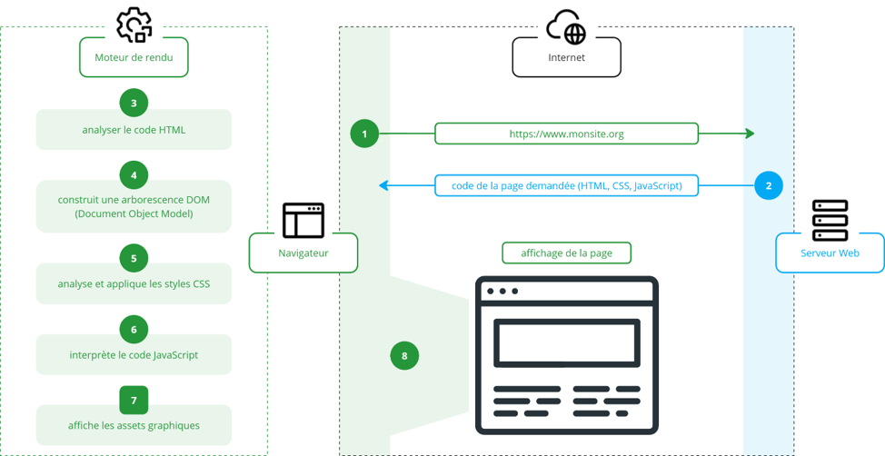
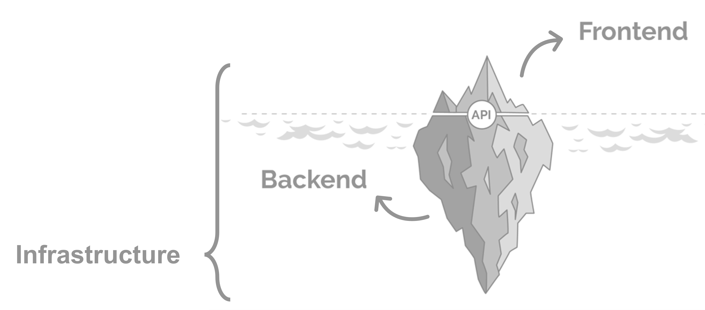

EFREI - M1 UX Design
Développement Web - Support de cours 2026
Intervenants
À qui s'adresse ce document ? À des designers UX - pas à des développeurs. L'objectif n'est pas que vous écriviez du code tous les jours, mais que vous compreniez comment fonctionne le Web, que vous puissiez lire et interpréter du HTML/CSS, et que vous deveniez les meilleurs partenaires possibles des équipes de développement.
Sommaire
- Le Web et Internet
- Les 3 Domaines du Web
- Les Langages du Web
- Vos outils : VS Code et les navigateurs
- HTML - Structure et Sémantique
- CSS - Style et Mise en page
- Le futur : Vibe Coding et Vibe Design
- Exercice pratique - Votre CV en HTML/CSS
- Auditer un site web - L'oeil du designer
- Faciliter le travail de vos développeurs
- Bibliographie et Ressources
- Récapitulatif
1. Le Web et Internet
1.1 Internet : c'est quoi exactement ?
Internet et le Web sont deux choses différentes - et la confusion entre les deux est l'une des plus répandues dans le digital, y compris chez des professionnels.
Internet est l'infrastructure réseau mondiale : un ensemble de milliards d'appareils connectés entre eux via des câbles, des fibres optiques et des ondes. C'est le "réseau des réseaux".
Le Web est un service qui fonctionne sur Internet - tout comme l'email, le streaming audio ou la VoIP sont d'autres services qui utilisent la même infrastructure.
Analogie : Internet = le réseau routier mondial. Le Web = les voitures qui y circulent. L'email = les camions de livraison. Ce sont tous des usages du même réseau.
Comment les données circulent : TCP/IP
Quand vous chargez une page web, vos données ne voyagent pas d'un seul bloc. Elles sont découpées en paquets, envoyées par des chemins potentiellement différents, et réassemblées à l'arrivée. C'est le protocole TCP/IP qui orchestre tout ça.
Pour faire simple : IP attribue une adresse unique à chaque appareil connecté (comme un numéro de rue), et TCP s'assure que tous les paquets arrivent dans le bon ordre, sans en perdre en route.
Tip UX : Quand un utilisateur se plaint que "le site rame", le problème est souvent réseau (paquets perdus, serveur lent) avant d'être visuel. Les DevTools → onglet Network vous montrent exactement où le temps se perd. C'est un réflexe à adopter avant de blâmer le design ou le code.
L'adresse IP et le DNS
Les humains retiennent des noms (efrei.fr), les machines ont besoin d'adresses IP (185.42.117.11). Le DNS (Domain Name System) fait la traduction - c'est l'annuaire d'Internet.
Quand vous tapez figma.com dans votre navigateur :
1. Votre machine consulte un serveur DNS
2. Le DNS répond avec l'adresse IP de Figma
3. Votre navigateur contacte ce serveur
1.2 HTTP et les requêtes
Le protocole HTTP / HTTPS
Chaque fois que votre navigateur charge une page, une image ou un fichier CSS, il envoie une requête HTTP à un serveur. Le serveur répond avec les données demandées.
HTTPS = HTTP + chiffrement (via TLS). Le cadenas dans la barre d'adresse. Indispensable pour tout site qui manipule des données personnelles ou des paiements. Depuis 2018, Google pénalise les sites en HTTP dans son référencement.
Les méthodes HTTP (les "verbes" du web)
Chaque échange entre votre navigateur et un serveur utilise un "verbe" qui décrit l'intention. Les deux principaux à connaître :
GET: "je veux voir quelque chose" - charger une page, afficher une image, consulter un profilPOST: "je veux envoyer quelque chose" - soumettre un formulaire, créer un compte, publier un commentaire
Il en existe d'autres (PUT pour modifier, DELETE pour supprimer), mais en tant que designer, GET et POST couvrent 90% des cas que vous rencontrerez.
Tip UX : Quand vous concevez un formulaire, vous dessinez en réalité un
POST. Quand vous affichez une liste de produits, c'est unGET. Quand vous ajoutez un bouton "Supprimer", ça déclenche unDELETE. La question de design pertinente : "est-ce qu'on demande confirmation à l'utilisateur avant une action destructive ?"
Les codes de réponse HTTP
Le serveur répond toujours avec un code de statut. Ils sont groupés par catégorie :
| Code | Catégorie | Exemples courants |
|---|---|---|
2xx |
Succès | 200 OK, 201 Created |
3xx |
Redirection | 301 Moved Permanently, 302 Found |
4xx |
Erreur client | 404 Not Found, 403 Forbidden, 401 Unauthorized |
5xx |
Erreur serveur | 500 Internal Server Error, 503 Service Unavailable |
Pour un designer : un bouton qui ne répond pas, une image cassée, une page blanche - ouvrez les DevTools (F12) → onglet Network. Vous y verrez chaque requête et son code de réponse. C'est souvent là que le problème se trouve.
1.3 Le modèle Client / Serveur
Tout échange web repose sur ce modèle fondamental.
[NAVIGATEUR / CLIENT] [SERVEUR]
| |
|--- Requête GET /index.html ------> |
| |--- lit le fichier
|<-- Réponse 200 OK + HTML --------- |
| |
|--- Requête GET /style.css -------> |
|<-- Réponse 200 OK + CSS ---------- |
| |
|--- Requête GET /logo.png --------> |
|<-- Réponse 200 OK + image -------- |
Pour afficher une seule page, le navigateur peut envoyer des dizaines de requêtes : pour le HTML, chaque fichier CSS, chaque image, chaque police, chaque fichier JavaScript. C'est pourquoi la performance web est un enjeu majeur - chaque requête coûte du temps.
Tip UX : Quand vous concevez une page avec 20 images haute résolution, un carrousel complexe et 5 polices différentes, posez-vous cette question : "Combien de requêtes HTTP cette page va-t-elle générer ?" Un bon designer pense à la performance dès la phase de maquette - pas après le développement.
Ce que ça implique pour le design :
- Une page avec beaucoup d'images non optimisées sera lente - l'utilisateur attend, et c'est une mauvaise expérience
- Un formulaire qui vérifie les données côté serveur (et non dans le navigateur) donnera un retour plus lent à l'utilisateur
- Les états de chargement ("loading states") ne sont pas décoratifs - ils représentent un temps réseau réel que l'utilisateur perçoit
Les navigateurs et moteurs de rendu

Votre HTML/CSS n'est pas interprété de la même façon par tous les navigateurs. Chaque navigateur utilise un moteur de rendu différent :
| Moteur | Navigateurs |
|---|---|
| Blink | Chrome, Edge, Opera, Brave, Arc |
| WebKit | Safari (iOS et macOS) |
| Gecko | Firefox |
Conséquence pratique : une animation CSS, un dégradé ou une propriété récente peut fonctionner dans Chrome et pas dans Safari. L'outil caniuse.com permet de vérifier la compatibilité de n'importe quelle propriété CSS ou API JavaScript.
1.4 L'hébergement web
Pour qu'un site soit accessible en ligne, il faut qu'il soit hébergé - stocké sur un serveur connecté en permanence à Internet. Sans hébergement, votre site n'existe que sur votre ordinateur.
En pratique, il existe des solutions simples et gratuites pour héberger un site vitrine ou un portfolio (comme GitHub Pages, Netlify ou Vercel), et des solutions plus complexes et payantes pour des applications qui gèrent des données utilisateur (comptes, paiements, etc.).
Ce qu'il faut retenir : l'hébergement est un coût et une contrainte technique. Quand votre développeur dit "ça nécessite un serveur", ça veut dire que la feature a un coût d'infrastructure en plus du coût de développement. Un site vitrine statique (HTML/CSS) coûte quasiment rien à héberger. Une application avec comptes utilisateurs, base de données et envoi d'emails coûte nettement plus.
1.5 Open Source vs Propriétaire
Deux grandes approches coexistent dans le monde du logiciel - et donc du web.
Open Source : le code source est public, accessible, modifiable et redistribuable. La communauté contribue collectivement à son amélioration.
Exemples : Linux, Firefox, VS Code, WordPress, React, Figma (partiellement)
Propriétaire : le code est détenu par une entreprise. L'accès est soumis à licence. L'entreprise contrôle l'évolution du produit.
Exemples : macOS, Sketch, Adobe Photoshop, Salesforce
Ce que ça change pour vous :
- La quasi-totalité des outils web (React, Vue, Angular, Tailwind, Node.js...) est open source
- Une startup choisira souvent des outils open source pour réduire les coûts
- Un grand groupe préférera parfois des solutions propriétaires pour le support et la garantie contractuelle
- En tant que designer, comprendre ce choix vous aide à anticiper les contraintes de l'équipe
2. Les 3 Domaines du Web
Quand on parle de "développement web", on parle en réalité de trois métiers très différents qui travaillent ensemble.
2.1 Vue d'ensemble
Au sommet se trouve L'UTILISATEUR — celui qui voit et interagit avec le produit final.
FRONT-END — HTML · CSS · JavaScript · Frameworks
Ce que l'utilisateur voit, touche et ressent. Le front-end reçoit les demandes de l'utilisateur et communique avec le back-end via des requêtes API.
BACK-END — Python · PHP · Node.js · Java · Ruby…
Logique métier, données, authentification, calculs. Le back-end traite les requêtes du front-end et s'appuie sur l'infrastructure pour stocker et récupérer les données.
INFRASTRUCTURE — Serveurs · Cloud · DevOps · BDD
Les fondations qui font tourner tout ça.

⚠️ Attention aux confusions :
- Front-end ≠ Front-office (le front-office est le service client d'une entreprise)
- Back-end ≠ Back-office (le back-office est la gestion interne d'une entreprise)
2.2 Le Front-end
Le front-end, c'est tout ce que l'utilisateur voit et avec quoi il interagit dans son navigateur.
Responsabilités :
- Intégrer les maquettes (passer de Figma au code)
- Gérer l'affichage sur différents devices (responsive)
- Implémenter les interactions (animations, transitions, formulaires)
- Optimiser les performances visuelles
- Garantir l'accessibilité
Technologies :
| Langage | Rôle |
|---|---|
| HTML | Structure et contenu |
| CSS | Apparence et mise en page |
| JavaScript | Interactivité et dynamisme |
Aujourd'hui, la plupart des projets utilisent en plus des frameworks : React, Vue, Angular, Svelte… Ces outils accélèrent le développement front-end en proposant des composants réutilisables.
Ce que le designer UX doit comprendre :
- Chaque élément de votre maquette sera "intégré" en HTML/CSS
- Une animation que vous concevez doit être "faisable" en CSS ou JavaScript
- Les composants Figma correspondent idéalement à des composants front-end réutilisables
- L'accessibilité (contraste, navigation clavier, ARIA labels) se gère principalement au niveau front-end
Pour aller plus loin : le guide MDN sur l'accessibilité web est un excellent point de départ → MDN - Accessibilité
2.3 Le Back-end
Le back-end est invisible pour l'utilisateur, mais indispensable pour tout ce qui nécessite des données, de la logique ou de l'authentification.
Responsabilités :
- Gérer les bases de données (stocker, récupérer, modifier des données)
- Authentifier les utilisateurs (connexion, sessions, tokens)
- Implémenter la logique métier (calculs, règles, workflows)
- Exposer des APIs que le front-end consomme
- Sécuriser les accès et les données
Technologies courantes :
- Python (Django, FastAPI) - très populaire, lisible, dominant en data/IA
- PHP (Laravel, Symfony) - historiquement dominant, encore très présent (WordPress)
- Node.js / JavaScript - même langage côté front et back, écosystème riche
- Java - robuste, utilisé dans les grandes entreprises
- Ruby (Ruby on Rails) - populaire dans les startups (Twitter en est né)
- Go, Rust - langages modernes, performants, pour les systèmes critiques
Ce que le designer UX doit comprendre :
- Si une feature nécessite de "se souvenir" de l'utilisateur ou de ses préférences → back-end requis
- Un formulaire de contact → back-end pour envoyer l'email
- Un panier e-commerce → back-end pour stocker les produits
- Les temps de chargement dépendent souvent de la vitesse du back-end à répondre
- Quand un dev dit "c'est compliqué côté back", ça signifie souvent une logique métier complexe ou des contraintes de base de données
Tip UX : La prochaine fois qu'une feature vous semble "simple côté design" mais que votre développeur la qualifie de complexe, posez cette question : "Est-ce que la complexité est côté front (affichage, interactions) ou côté back (logique, données) ?" La réponse change radicalement la manière dont vous pouvez aider : simplifier l'affichage (front) relève de votre expertise. Simplifier la logique (back) demande de repenser le besoin métier ensemble.
2.4 L'Infrastructure
L'infrastructure est la fondation invisible qui fait tourner le tout : serveurs, réseau, bases de données, sécurité, déploiement.
Avant le Cloud : Les entreprises possédaient leurs propres serveurs physiques. Coûteux à acheter, maintenir, mettre à l'échelle. Un pic de trafic → le site tombait.
Avec le Cloud (AWS, GCP, Azure, Vercel...) : On loue de la capacité à la demande. Pas de matériel à gérer. La capacité s'adapte automatiquement au trafic. Une startup peut démarrer pour quelques euros par mois et scaler à des millions d'utilisateurs sans changer d'infrastructure.
DevOps : C'est la discipline qui fait le lien entre le développement (Dev) et la mise en ligne (Ops, pour "opérations"). Concrètement, les DevOps s'occupent de mettre le code en production, de surveiller que tout tourne bien, et de gérer les mises à jour automatiques.
Ce que le designer UX doit comprendre :
- Les environnements (dev, staging, production) expliquent pourquoi il peut y avoir des différences entre "ce que vous avez vu en recette" et "ce qui est en ligne"
- Un déploiement n'est pas instantané - il y a des étapes de validation
- La disponibilité (uptime) est une contrainte réelle : 99,9% de disponibilité = 8h de downtime par an
3. Les Langages du Web
3.1 HTML, CSS et JavaScript : les trois piliers du front-end
Le front-end repose sur trois langages complémentaires, chacun avec un rôle précis.
Votre page web = une maison
HTML → La structure (murs, pièces, portes)
CSS → La décoration (couleurs, meubles, lumières)
JS → L'électricité (lumières qui s'allument, portes qui s'ouvrent)
Ces trois langages sont universels et interprétés directement par le navigateur - aucune installation, aucun logiciel supplémentaire. Tout appareil connecté peut lire du HTML/CSS/JS.
3.2 HTML - Un langage de balisage
HTML signifie HyperText Markup Language. Ce n'est pas un langage de programmation - il ne calcule rien. C'est un langage de description : il dit au navigateur ce qu'est le contenu, pas comment il doit avoir l'air.
La logique des balises :
<balise attribut="valeur">Contenu</balise>
Une balise ouvrante <p>, du contenu, une balise fermante </p>. Simple. Certaines balises sont "auto-fermantes" : <img>, <input>, <br>.
Ce que ça donne dans le navigateur sans CSS :
<h1>Mon portfolio</h1>
<p>Je suis designer UX chez GREEN Conseil.</p>
<a href="https://efrei.fr">Voir le site EFREI</a>
Résultat : texte brut, hiérarchisé. Le navigateur applique ses styles par défaut (h1 en gros, lien en bleu souligné). C'est le HTML pur - fonctionnel mais sans esthétique.
Ce que vous, designer, devez retenir :
- Chaque balise HTML a un sens sémantique : <h1> n'est pas juste "du texte gros", c'est le titre principal de la page
- Ce sens est utilisé par les moteurs de recherche (SEO) et les lecteurs d'écran (accessibilité)
- Utiliser les balises à mauvais escient (mettre du texte en <h1> juste pour la taille, par exemple) a des conséquences concrètes sur le référencement et l'accessibilité
Référence : la liste complète des balises HTML avec leur usage est disponible sur MDN - Référence des éléments HTML.
3.3 CSS - Les feuilles de style
CSS signifie Cascading Style Sheets (Feuilles de Style en Cascade). Il contrôle l'apparence du HTML : couleurs, typographie, espacement, mise en page, animations.
La logique de base :
sélecteur {
propriété: valeur;
}
La "Cascade" - pourquoi ce mot compte :
Le "C" de CSS signifie Cascade. Imaginez une cascade d'eau : l'eau coule du haut vers le bas, et chaque niveau peut modifier le flux. En CSS, c'est pareil : les styles "descendent" dans la hiérarchie HTML, et plusieurs règles peuvent s'appliquer au même élément en même temps.
Quand deux règles se contredisent (l'une dit "rouge", l'autre dit "bleu"), le navigateur doit trancher. Il utilise un système de spécificité - un ordre de priorité :
id (#mon-id) > class (.ma-classe) > balise (p)
Concrètement : un style appliqué via #mon-id l'emporte toujours sur .ma-classe, qui l'emporte sur p. C'est pour ça que dans les DevTools, vous verrez parfois des styles barrés - ils ont été "perdants" dans cette hiérarchie.
Tip UX : Quand vous inspectez un site et que vous voyez qu'un style "ne s'applique pas" (barré dans les DevTools), ce n'est pas un bug - c'est la cascade en action. Cette mécanique explique aussi pourquoi un développeur peut avoir du mal à "juste changer la couleur de ce bouton" : il faut d'abord comprendre quelle règle CSS a la priorité.
Référence : MDN - La cascade CSS explique les règles de priorité en détail.
Ce que vous, designer, devez retenir :
- Votre maquette Figma est une "promesse" - le CSS est la réalisation
- Figma n'a pas de contraintes ; CSS en a (compatibilité navigateur, performance, cascade)
- Les DevTools vous permettent de voir et modifier le CSS de n'importe quelle page en temps réel - c'est votre meilleur outil d'exploration
3.4 JavaScript - L'interactivité
JavaScript (à ne pas confondre avec Java - ce sont deux langages totalement différents) est le seul langage de programmation natif du navigateur.
Là où HTML décrit et CSS stylise, JavaScript agit : il peut lire et modifier le contenu de la page, réagir aux interactions utilisateur, charger des données depuis un serveur, créer des animations complexes.
Ce que JS permet :
- Un menu burger qui s'ouvre au clic
- Un formulaire qui valide les données avant d'envoyer
- Un carousel d'images automatique
- Des données qui se mettent à jour sans recharger la page (comme un feed Instagram)
- Des cartes interactives (Google Maps)
- Des notifications en temps réel
Ce que vous, designer, devez retenir :
- Une animation qui "répond" à l'utilisateur (ex: glisser-déposer, drag et drop) → JavaScript
- Un composant "stateful" (qui garde en mémoire un état : panier, étapes de formulaire) → JavaScript
- La performance JavaScript est un enjeu critique : un JS trop lourd ralentit la page
- Quand un dev dit "il faut du JS pour ça", c'est souvent une feature plus complexe à maintenir
Tip UX : Pour savoir rapidement si une interaction nécessite JavaScript, posez-vous cette question : "Est-ce que le comportement change en fonction d'une action de l'utilisateur après le chargement de la page ?" Si oui → JavaScript. Les menus déroulants au clic, les filtres dynamiques, les formulaires multi-étapes, les notifications - tout ce qui "réagit" à l'utilisateur en temps réel nécessite du JS. En revanche, un effet au survol (
:hover), une animation au chargement, ou un changement de couleur sont purement CSS.
4. Vos outils : VS Code et les navigateurs
Avant de lire du code ou d'en écrire, il faut configurer son environnement. Cette section couvre les outils utilisés en cours.
4.1 VS Code - Installation et configuration
Visual Studio Code est l'éditeur de code le plus utilisé au monde. Gratuit, open source (Microsoft), disponible sur macOS, Windows et Linux.
Installation
macOS :
1. Aller sur code.visualstudio.com
2. Cliquer sur "Download for Mac" → télécharge un .zip
3. Double-cliquer sur le .zip → glisser Visual Studio Code.app dans le dossier Applications
4. Ouvrir VS Code → ouvrir la palette de commandes ⌘ + Shift + P → taper shell command → cliquer "Install 'code' command in PATH"
Ce dernier point permet de taper
code .dans le Terminal pour ouvrir n'importe quel dossier dans VS Code directement.
Windows :
1. Aller sur code.visualstudio.com
2. Cliquer sur "Download for Windows" → télécharge un .exe
3. Lancer l'installateur, cocher impérativement :
- "Ajouter à PATH"
- "Ajouter l'action 'Ouvrir avec Code' au menu contextuel"
4. Redémarrer si demandé
Extensions indispensables
Installez ces extensions (icône puzzle dans la barre latérale, ou ⌘/Ctrl + Shift + X) :
| Extension | Usage |
|---|---|
| Live Server (Ritwick Dey) | Lance un serveur local, recharge le navigateur automatiquement à chaque sauvegarde - absolument indispensable |
| Prettier | Formate automatiquement votre code HTML/CSS à la sauvegarde - élimine les problèmes d'indentation |
| Auto Rename Tag | Renomme la balise fermante automatiquement quand vous modifiez la balise ouvrante |
| CSS Peek | Survol d'une classe HTML → affiche immédiatement la règle CSS correspondante |
| French Language Pack | Interface en français |
Workflow de base
1. Ouvrir son dossier de projet dans VS Code
→ Fichier → Ouvrir le dossier (ou glisser le dossier sur l'icône VS Code)
⚠️ Toujours ouvrir le DOSSIER, pas juste le fichier HTML
2. Créer ses fichiers HTML/CSS depuis l'explorateur latéral (icône dossier)
3. Dans un fichier .html : clic droit → "Open with Live Server"
→ Ouvre automatiquement http://localhost:5500 dans Chrome
→ La page se rafraîchit à chaque sauvegarde (⌘/Ctrl + S)
4. Écrire du code → sauvegarder → voir le résultat en temps réel
Le snippet HTML5 automatique (Emmet)
Dans un fichier .html vide, tapez simplement ! puis appuyez sur Tab :
<!-- VS Code génère automatiquement tout ce squelette -->
<!DOCTYPE html>
<html lang="en">
<head>
<meta charset="UTF-8">
<meta name="viewport" content="width=device-width, initial-scale=1.0">
<title>Document</title>
</head>
<body>
</body>
</html>
Pensez à changer lang="en" en lang="fr" pour un site en français.
Tip UX : Même si vous n'écrivez pas de code au quotidien, savoir utiliser VS Code vous donne un super-pouvoir : vous pouvez ouvrir n'importe quel projet de vos développeurs pour comprendre comment il est structuré, lire les noms de fichiers et de classes CSS, et comparer avec votre maquette Figma. C'est un outil de compréhension, pas juste de production.
Raccourcis essentiels
| Raccourci macOS | Raccourci Windows | Action |
|---|---|---|
⌘ + S |
Ctrl + S |
Sauvegarder |
⌘ + Z |
Ctrl + Z |
Annuler |
⌘ + Shift + Z |
Ctrl + Y |
Rétablir |
⌘ + / |
Ctrl + / |
Commenter/décommenter |
⌘ + D |
Ctrl + D |
Sélectionner la prochaine occurrence |
Alt + ↑/↓ |
Alt + ↑/↓ |
Déplacer la ligne |
⌘ + P |
Ctrl + P |
Ouvrir rapidement un fichier |
⌘ + Shift + P |
Ctrl + Shift + P |
Palette de commandes |
4.2 Tester dans les navigateurs - Chrome, Safari, Brave
C'est l'étape la plus oubliée et la plus importante : toujours tester dans plusieurs navigateurs. Ce qui fonctionne dans Chrome ne fonctionne pas forcément dans Safari - et beaucoup d'entre vous l'ont découvert à leurs dépens en cours.
Le problème Safari - ce que vous avez vécu en cours
Safari utilise le moteur WebKit, tandis que Chrome, Brave, Arc et Edge utilisent Blink. Firefox utilise Gecko. Ces moteurs n'interprètent pas les CSS de la même façon et n'implémentent pas les nouvelles fonctionnalités au même rythme.
Safari est régulièrement en retard sur certaines fonctionnalités. Ce n'est pas un bug de votre code - c'est une incompatibilité navigateur.
Concrètement, qu'est-ce que ça veut dire pour vous ? Que si vous codez et testez uniquement dans Chrome, vous risquez d'avoir des surprises en ouvrant votre page dans Safari. Un dégradé qui ne s'affiche pas, un défilement qui ne se fait pas en douceur, un formulaire qui n'a pas le même rendu - ce ne sont pas des bugs dans votre code, ce sont des différences entre navigateurs.
Que faire quand ça arrive ? Le réflexe à adopter est d'aller sur caniuse.com : tapez le nom de la propriété CSS qui pose problème, et le site vous dit exactement quels navigateurs la supportent et depuis quelle version. Parfois, la solution est simplement d'écrire la propriété deux fois (une version "préfixée" pour Safari, une version standard). Votre développeur saura quoi faire - l'important est que vous sachiez que le problème vient du navigateur, pas du code.
Tip UX : Quand vous livrez un travail ou que vous montrez un prototype, précisez toujours dans quel navigateur vous l'avez testé. "Testé dans Chrome et Safari" est une information précieuse pour votre équipe. Si quelque chose ne fonctionne que dans Chrome, mieux vaut le savoir tôt.
Activer les DevTools dans Safari (étape souvent manquée)
Par défaut, Safari cache ses outils de développement. Pour les activer :
Sur Mac :
1. Safari → Réglages (ou Préférences) → onglet Avancé
2. Cocher "Afficher les fonctionnalités pour les développeurs Web" (ou "Afficher le menu Développement")
3. Le menu Développement apparaît dans la barre de menus
4. Raccourci : ⌘ + Option + I
Ouvrir les DevTools
| Navigateur | Raccourci macOS | Raccourci Windows |
|---|---|---|
| Chrome | ⌘ + Option + I |
F12 |
| Safari | ⌘ + Option + I |
(macOS uniquement) |
| Brave | ⌘ + Option + I |
F12 |
| Firefox | ⌘ + Option + I |
F12 |
Ce qu'on consulte dans les DevTools
Onglet Elements (Chrome) / Inspecteur (Firefox/Safari) :
- Voir le HTML réel de la page (pas juste votre fichier source - le HTML après JavaScript)
- Cliquer sur un élément pour voir toutes les règles CSS qui s'y appliquent, et lesquelles sont annulées par d'autres
- Voir le Box Model interactif (padding, border, margin visualisés)
- Modifier le CSS en direct pour tester (temporaire, non sauvegardé)
Onglet Network :
- Voir toutes les requêtes HTTP émises lors du chargement
- Détecter les 404 → un fichier n'est pas trouvé → souvent un problème de chemin relatif
- Repérer les ressources lentes à charger
Mode responsive (Chrome/Brave) :
- Icône tablette/mobile en haut à gauche des DevTools
- Simuler n'importe quelle taille d'écran sans vrai smartphone
- Tester vos media queries
Protocole de test recommandé
Avant de partager ou de livrer un travail :
✅ 1. Chrome ou Brave : votre navigateur principal de développement
✅ 2. Safari : crucial si vous (ou vos utilisateurs) êtes sur Mac/iPhone
✅ 3. Mode responsive dans les DevTools :
- 375px → iPhone SE / iPhone 14
- 768px → iPad / tablette
- 1440px → Desktop standard
Si ça marche dans Chrome mais pas dans Safari :
→ Consulter caniuse.com pour la propriété CSS en question
→ Signaler le problème à votre développeur avec le nom de la propriété
→ Chercher ensemble une propriété alternative compatible
5. HTML - Structure et Sémantique
5.1 Structure d'une page HTML
Voici le squelette minimal de toute page web valide, avec chaque élément expliqué :
<!DOCTYPE html>
<!-- Déclare que ce document est en HTML5 (standard actuel) -->
<html lang="fr">
<!-- Balise racine. L'attribut lang="fr" indique la langue -->
<!-- Utilisé par les lecteurs d'écran et les traducteurs automatiques -->
<head>
<!-- Zone de métadonnées : INVISIBLE pour l'utilisateur -->
<!-- Mais lu par les navigateurs, moteurs de recherche, réseaux sociaux -->
<meta charset="UTF-8">
<!-- Encodage des caractères : permet d'afficher les accents (é, à, ü...) -->
<!-- Toujours mettre en premier -->
<meta name="viewport" content="width=device-width, initial-scale=1.0">
<!-- CRUCIAL pour le responsive : adapte la page à la largeur du device -->
<!-- Sans ça, un mobile afficherait la version desktop zoomée dézoomée -->
<title>Mon portfolio - Ludovic LEGENDART</title>
<!-- Texte affiché dans l'onglet du navigateur -->
<!-- Aussi utilisé par Google pour l'affichage dans les résultats de recherche -->
<meta name="description" content="Portfolio UX Design de Ludovic LEGENDART">
<!-- Description pour les moteurs de recherche (160 caractères max) -->
<!-- Apparaît sous le titre dans Google -->
<link rel="stylesheet" href="css/style.css">
<!-- Lien vers le fichier CSS externe -->
<!-- rel="stylesheet" indique le type de relation -->
<!-- href indique le chemin vers le fichier -->
<!-- ⚠️ Tout le CSS doit être déclaré ici, dans le <head> :
soit via <link> vers un fichier externe (recommandé),
soit via une balise <style> pour du CSS embarqué.
Ne mettez JAMAIS de <style> dans le <body> :
c'est du HTML invalide et ça peut provoquer un "flash"
de contenu non stylisé au chargement. -->
</head>
<body>
<!-- Tout le contenu VISIBLE de la page est ici -->
<header>
<!-- En-tête du site : logo, navigation principale -->
<!-- Apparaît généralement en haut de toutes les pages -->
<a href="index.html">
<img src="images/logo.svg" alt="Logo - retour à l'accueil">
<!-- alt="" est OBLIGATOIRE pour l'accessibilité -->
<!-- Les lecteurs d'écran lisent ce texte à la place de l'image -->
</a>
<nav>
<!-- Balise dédiée à la navigation principale -->
<a href="index.html">Accueil</a>
<a href="projets.html">Projets</a>
<a href="#contact">Contact</a>
<!-- href="#contact" : ancre vers l'élément ayant id="contact" sur la même page -->
</nav>
</header>
<main>
<!-- Contenu principal et UNIQUE de la page -->
<!-- Il ne peut y avoir qu'un seul <main> par page -->
<section id="hero">
<!-- Section = groupe thématique de contenu -->
<!-- L'attribut id permet de cibler cet élément en CSS ou en ancre (#hero) -->
<h1>Je conçois des expériences numériques</h1>
<!-- h1 = titre principal de la page. UN SEUL par page (SEO) -->
<p>Designer UX centré sur l'utilisateur, basée à Paris.</p>
<!-- p = paragraphe. Le conteneur de texte standard -->
<a href="projets.html" class="btn-principal">
Voir mes projets
</a>
<!-- class="btn-principal" : permet de cibler cet élément en CSS -->
<!-- Plusieurs éléments peuvent avoir la même classe -->
</section>
<section id="projets">
<h2>Projets récents</h2>
<!-- h2 = sous-titre de section. Respectez la hiérarchie : h1 → h2 → h3 -->
<article class="carte-projet">
<!-- article = contenu autonome et complet en lui-même -->
<!-- Peut être extrait de la page et rester compréhensible -->
<img
src="images/projet-refonte-app.jpg"
alt="Écran d'accueil de l'application bancaire redesignée"
>
<!-- L'attribut alt décrit l'image pour les non-voyants -->
<!-- ET pour Google Images (SEO) -->
<h3>Refonte application bancaire</h3>
<p>Amélioration du parcours de paiement mobile. Réduction des abandons de 34%.</p>
<a href="projet-banque.html">Voir le cas d'étude →</a>
</article>
<article class="carte-projet">
<img src="images/projet-saas.jpg" alt="Dashboard de l'outil SaaS redesigné">
<h3>Redesign dashboard SaaS</h3>
<p>Simplification de l'interface pour un outil de gestion de projets.</p>
<a href="projet-saas.html">Voir le cas d'étude →</a>
</article>
</section>
<aside>
<!-- Contenu secondaire, lié mais pas central (sidebar, encart, citation) -->
<p>"Le meilleur design est celui qu'on ne remarque pas."</p>
</aside>
</main>
<footer id="contact">
<!-- Pied de page : infos de contact, liens légaux, réseaux sociaux -->
<!-- L'id="contact" est ciblé par le lien #contact dans la nav -->
<p>llegendart@efrei.fr</p>
<a href="https://linkedin.com/in/..." target="_blank">LinkedIn</a>
<!-- target="_blank" : ouvre dans un nouvel onglet -->
<p>© 2026 - Ludovic LEGENDART</p>
</footer>
</body>
</html>
5.2 La sémantique HTML : pourquoi les balises ont un sens
Balises sémantiques vs non-sémantiques :
| Balise | Sémantique ? | Usage |
|---|---|---|
<header> |
✅ Oui | En-tête de page ou de section |
<nav> |
✅ Oui | Navigation principale |
<main> |
✅ Oui | Contenu principal (unique par page) |
<section> |
✅ Oui | Groupe thématique de contenu |
<article> |
✅ Oui | Contenu autonome (article, carte projet) |
<aside> |
✅ Oui | Contenu secondaire (sidebar, encart) |
<footer> |
✅ Oui | Pied de page |
<h1> à <h6> |
✅ Oui | Hiérarchie de titres |
<p> |
✅ Oui | Paragraphe de texte |
<div> |
❌ Non | Conteneur générique, sans sens |
<span> |
❌ Non | Conteneur inline générique |
Pourquoi ça compte :
<!-- ❌ Code non sémantique (fonctionnel, mais problématique) -->
<div class="big-text">Bienvenue sur mon portfolio</div>
<div class="nav-container">
<div class="nav-item">Accueil</div>
<div class="nav-item">Projets</div>
</div>
<!-- ✅ Code sémantique (même rendu visuel, bien meilleur pour les machines) -->
<h1>Bienvenue sur mon portfolio</h1>
<nav>
<a href="index.html">Accueil</a>
<a href="projets.html">Projets</a>
</nav>
Les deux codes peuvent sembler identiques visuellement, mais pour un moteur de recherche ou un lecteur d'écran :
- Dans le premier cas : trois boîtes de texte génériques, aucun sens
- Dans le second cas : un titre principal, une navigation - structure claire
Impact SEO : Google comprend mieux votre page et la référence mieux. Impact accessibilité : Un utilisateur naviguant au clavier ou avec un lecteur d'écran (NVDA, VoiceOver) dépend de cette structure pour naviguer.
Tip UX : Lors de vos audits UX, testez la sémantique d'un site en une seconde : dans les DevTools, désactivez le CSS (Elements → panneau Styles → décochez
<style>en haut). Si la page reste compréhensible et navigable sans CSS, sa structure HTML est solide. Si tout devient un amas illisible, la sémantique a été négligée.
5.3 La responsivité
Un site responsive s'adapte automatiquement à la taille de l'écran. Ce n'est pas optionnel en 2026 : plus de 60% du trafic web mondial vient des mobiles.
Les breakpoints
Les breakpoints (ou points de rupture) sont les largeurs d'écran à partir desquelles la mise en page change.
Breakpoints courants :
| Nom | Largeur | Device |
|---|---|---|
| Mobile | < 768px | Smartphones |
| Tablet | 768px – 1024px | Tablettes |
| Desktop | > 1024px | Ordinateurs |
| Wide | > 1440px | Grands écrans |
Pour un designer : quand vous créez des frames dans Figma, ces largeurs correspondent à des standards réels. Un frame à 375px = iPhone 14. Un frame à 1440px = desktop standard.
Les media queries CSS
Le CSS permet de définir des règles qui ne s'appliquent qu'à certaines tailles d'écran. Le principe est simple : vous écrivez vos styles "de base" (pour mobile), puis vous ajoutez des blocs @media qui ne se déclenchent qu'à partir d'une certaine largeur.
/* Styles de base : s'appliquent sur tous les écrans (mobile d'abord) */
.carte-projet {
width: 100%; /* la carte prend toute la largeur */
margin-bottom: 1rem;
}
/* A partir de 768px (tablette), on change la largeur */
@media (min-width: 768px) {
.carte-projet {
width: 48%; /* 2 cartes par ligne */
}
}
/* A partir de 1024px (desktop), encore un changement */
@media (min-width: 1024px) {
.carte-projet {
width: 31%; /* 3 cartes par ligne */
}
}
La syntaxe @media (min-width: 768px) signifie : "les styles à l'intérieur ne s'appliquent que si l'écran fait 768px de large ou plus". Le navigateur évalue cette condition en temps réel - si vous redimensionnez la fenêtre, les styles changent instantanément.
L'approche "Mobile First" : on écrit d'abord le CSS pour mobile (le plus contraint), puis on ajoute des règles pour les écrans plus grands avec min-width. C'est la bonne pratique actuelle - le mobile est la priorité.
Pourquoi "mobile first" et pas l'inverse ? Parce qu'un écran mobile est le contexte le plus difficile : peu de place, connexion parfois lente, interactions au doigt. Si votre design fonctionne bien sur mobile, l'adapter au desktop est une question d'espace en plus - c'est facile. En revanche, réduire un design desktop complexe pour le faire rentrer sur mobile est souvent douloureux : il faut couper, empiler, réorganiser. Commencer par le plus contraint, c'est s'épargner des refactorisations coûteuses.
Tip UX : Quand vous concevez dans Figma, commencez par la frame 375px (mobile), puis étendez à 1440px (desktop). C'est exactement ce que feront vos développeurs avec les media queries. Si vous livrez uniquement le desktop, le développeur devra "inventer" la version mobile - et le résultat sera rarement celui que vous auriez voulu.
Référence : MDN - Les media queries pour les débutants - guide pas-à-pas avec exemples interactifs.
5.4 Organisation des fichiers : structure d'un projet web
Un projet web est organisé en dossiers. Voici la structure standard :
mon-portfolio/
│
├── index.html ← Page d'accueil (TOUJOURS à la racine)
├── projets.html ← Page projets
├── projet-banque.html ← Page d'un projet spécifique
│
├── css/
│ └── style.css ← Toutes les règles CSS du site
│
├── js/
│ └── main.js ← Scripts JavaScript
│
└── images/
├── logo.svg
├── projet-banque.jpg
└── projet-saas.jpg
La page d'accueil s'appelle toujours index.html - c'est une convention universelle. Quand vous tapez monsite.com, le serveur cherche automatiquement index.html à la racine.
Chemins relatifs vs absolus
Comprendre les chemins est essentiel - la grande majorité des problèmes du type "mon image ne s'affiche pas" ou "mon CSS ne se charge pas" viennent d'une erreur de chemin.
La structure comme un arbre de répertoires
Imaginez votre projet comme un arbre de dossiers :
mon-portfolio/ ← RACINE du projet
│
├── index.html ← Page d'accueil (à la racine)
├── projets.html ← Page projets
│
├── pages/
│ └── projet-banque.html ← Page détail (dans un sous-dossier)
│
├── css/
│ └── style.css
│
└── images/
├── logo.svg
└── projet-banque.jpg
Le chemin relatif : "à partir d'ici"
Un chemin relatif est calculé depuis l'emplacement du fichier actuel. Il ne contient ni http:// ni / au début.
Depuis index.html (à la racine) :
<img src="images/logo.svg" alt="Logo">
<!-- "Depuis ma position (racine), descends dans images/, puis prends logo.svg" -->
<link rel="stylesheet" href="css/style.css">
<!-- "Depuis ma position (racine), descends dans css/, puis prends style.css" -->
Depuis pages/projet-banque.html (dans un sous-dossier) :
<!-- ❌ ERREUR fréquente : oublier de remonter d'un niveau -->
<img src="images/logo.svg" alt="Logo">
<!-- Le navigateur cherche "pages/images/logo.svg" → n'existe pas ! -->
<!-- ✅ CORRECT : on remonte d'un niveau avec ".." avant de descendre -->
<img src="../images/logo.svg" alt="Logo">
<!-- ".." = "remonter au dossier parent" → on va à la racine, puis dans images/ -->
<link rel="stylesheet" href="../css/style.css">
<!-- Pareil : on remonte à la racine, puis on descend dans css/ -->
Mémo
..: Deux points..signifient "revenir au dossier parent". C'est comme appuyer sur "Retour arrière" dans le Finder ou l'Explorateur Windows. On peut enchaîner :../../remonte de deux niveaux.
Le chemin absolu : l'adresse complète
Un chemin absolu est une URL complète. Il ne dépend pas de l'emplacement du fichier actuel.
<!-- URL absolue complète : pour des ressources externes uniquement -->
<link href="https://fonts.googleapis.com/css2?family=Inter" rel="stylesheet">
<img src="https://images.unsplash.com/photo-xxx" alt="Photo Unsplash">
<!-- Chemin absolu depuis la racine du domaine (commence par /) -->
<img src="/images/logo.svg" alt="Logo">
<!-- ⚠️ Fonctionne bien sur un vrai serveur, mais CASSE si vous ouvrez
le fichier directement depuis votre ordinateur (protocole file://) -->
⚠️ Une erreur fréquente : ouvrir le fichier directement depuis le Finder
Un réflexe courant est de double-cliquer sur son index.html pour l'ouvrir dans le navigateur. Le navigateur utilise alors le protocole file:// au lieu de http://. Résultat :
- Les chemins absolus commençant par
/ne fonctionnent plus - Certaines polices et ressources externes sont bloquées
- Vous voyez votre page sans styles → panique 😱
La solution : toujours utiliser Live Server (voir section 4.1). Live Server simule un serveur HTTP réel - vos chemins fonctionnent exactement comme en production.
Règle d'or : utilisez des chemins relatifs pour vos propres fichiers. Ça garantit que votre site fonctionnera quel que soit l'endroit où vous le déposez. Et ouvrez toujours vos pages via Live Server, jamais directement depuis le Finder ou l'Explorateur.
5.5 Les liens : la balise <a>
La balise <a> (ancre) est fondamentale - c'est elle qui crée tous les liens du web.
<!-- Lien interne : vers une autre page du même site -->
<a href="projets.html">Voir mes projets</a>
<!-- Lien interne : vers une section de la même page -->
<a href="#contact">Aller au contact</a>
<!-- L'élément cible doit avoir id="contact" -->
<!-- Lien externe : vers un autre site -->
<a href="https://www.figma.com" target="_blank" rel="noopener">
Figma
</a>
<!-- target="_blank" : ouvre dans un nouvel onglet -->
<!-- rel="noopener" : sécurité (empêche la page liée d'accéder à votre page) -->
<!-- Lien email -->
<a href="mailto:llegendart@efrei.fr">Écrire un email</a>
<!-- Lien téléphone (sur mobile, déclenche l'appel) -->
<a href="tel:+33600000000">Appeler</a>
<!-- Lien de téléchargement -->
<a href="pdf/mon-cv.pdf" download>Télécharger mon CV (PDF)</a>
Tip UX : Le texte d'un lien (ce qu'on appelle le "link text") a un impact direct sur l'accessibilité et le SEO. "Cliquez ici" ou "En savoir plus" ne dit rien quand il est lu seul par un lecteur d'écran. Préférez des textes explicites : "Voir le cas d'étude Refonte bancaire" ou "Télécharger mon CV (PDF, 320 Ko)". Dans vos maquettes Figma, c'est votre responsabilité de rédiger ces textes correctement - le développeur ne devrait pas avoir à les inventer.
5.6 Les pièges des espaces et caractères en HTML
Ce sujet peut surprendre au début, mais il explique pas mal de "bugs" rencontrés par les débutants en HTML.
Le navigateur ignore les espaces multiples
En HTML, plusieurs espaces consécutifs sont toujours réduits à un seul. Peu importe combien vous en tapez dans votre éditeur.
<!-- Ce que vous écrivez dans le code -->
<p>Bonjour tout le monde</p>
<!-- Ce que le navigateur affiche -->
Bonjour tout le monde
La même règle s'applique aux retours à la ligne :
<!-- Ce que vous écrivez -->
<p>
Première ligne
Deuxième ligne
Troisième ligne
</p>
<!-- Ce que le navigateur affiche -->
Première ligne Deuxième ligne Troisième ligne
Tout est collé sur une seule ligne, les sauts de ligne devenant de simples espaces.
Comment forcer un espace insécable :
(Non-Breaking Space) est une entité HTML qui représente un espace que le navigateur n'ignorera pas et sur lequel il ne coupera pas une ligne.
<!-- Forcer 3 espaces entre deux mots -->
<p>Prix : 42 €</p>
<!-- Empêcher une coupure de ligne entre deux mots -->
<p>Voir page 42</p>
<!-- "page" et "42" resteront toujours sur la même ligne -->
⚠️ Attention : utiliser
pour créer de l'espacement visuel est une mauvaise pratique. C'est le travail du CSS (padding,margin,gap). est réservé aux cas sémantiques (unités de mesure, numéros de page, etc.).
Les entités HTML courantes
Certains caractères ont un sens spécial en HTML (<, >, &) et doivent être échappés pour être affichés comme du texte :
| Caractère | Entité HTML | Usage |
|---|---|---|
< |
< |
Afficher le signe "inférieur à" (sinon interprété comme balise) |
> |
> |
Afficher le signe "supérieur à" |
& |
& |
Afficher l'esperluette (sinon début d'entité) |
" |
" |
Guillemet double dans un attribut |
| espace insécable | |
Espace non collapsible |
© |
© |
Symbole copyright |
→ |
→ |
Flèche droite |
€ |
€ |
Symbole euro |
<!-- ❌ Problème : le navigateur interprète < comme une balise et plante -->
<p>Si a < b et b > c alors...</p>
<!-- ✅ Solution : échapper les caractères spéciaux -->
<p>Si a < b et b > c alors...</p>
Forcer un retour à la ligne : <br>
La balise <br> insère un saut de ligne. C'est une balise auto-fermante (pas de </br>).
<p>
Ludovic LEGENDART<br>
CTO - GREEN Conseil<br>
Paris, France
</p>
⚠️
<br>n'est pas fait pour créer de l'espacement vertical - utilisezmarginoupaddingen CSS pour ça.<br>est réservé aux cas où le retour à la ligne fait partie du contenu (adresses postales, vers de poésie, coordonnées).
Préserver le formatage : <pre>
La balise <pre> (preformatted text) est la seule qui respecte tous les espaces et retours à la ligne tels qu'ils ont été tapés.
<pre>
Nom : Ludovic
Rôle : CTO
Email : llegendart@efrei.fr
</pre>
C'est aussi la balise utilisée pour afficher du code dans une page web (souvent combinée avec <code>) :
<pre><code>
.btn {
display: inline-block;
padding: 12px 24px;
}
</code></pre>
5.7 Les images en HTML/CSS
Les images sont partout sur le web - et elles sont souvent mal utilisées : mauvais format, taille incorrecte, accessibilité oubliée, performance ignorée. Voici les bonnes pratiques 2026.
La balise <img> et ses attributs essentiels
<!-- Structure complète et correcte -->
<img
src="images/projet-banque.jpg"
alt="Capture d'écran de l'application bancaire redesignée"
width="800"
height="450"
loading="lazy"
>
Décryptage attribut par attribut :
| Attribut | Obligatoire | Rôle |
|---|---|---|
src |
✅ Oui | Chemin vers l'image (relatif ou URL) |
alt |
✅ Oui | Description textuelle - accessibilité + SEO |
width / height |
Recommandé | Dimensions naturelles - évite le saut de mise en page au chargement |
loading="lazy" |
Recommandé | L'image se charge seulement quand elle approche du viewport |
L'attribut alt : bien plus qu'une formalité
alt est lu par les lecteurs d'écran (pour les personnes malvoyantes), indexé par Google, et s'affiche si l'image ne charge pas. C'est une responsabilité de contenu, pas juste une case à cocher.
<!-- ❌ Vide sans intention : inutile pour l'accessibilité -->
<img src="equipe.jpg" alt="">
<!-- ❌ Générique : aucune valeur ajoutée -->
<img src="equipe.jpg" alt="image">
<img src="equipe.jpg" alt="photo">
<!-- ✅ Descriptif et précis -->
<img src="equipe.jpg" alt="L'équipe de 5 designers du studio Figma Agency en réunion">
<!-- ✅ Cas particulier : image purement décorative -->
<!-- alt="" intentionnel → le lecteur d'écran l'ignore complètement (bon comportement) -->
<img src="motif-decoratif.svg" alt="" role="presentation">
En tant que designer : l'alt text est une décision éditoriale. Dans vos specs Figma, documentez les descriptions d'images pour vos développeurs - tout comme vous annotez les couleurs et les espacements. L'accessibilité se conçoit dès la phase design.
Les formats d'image sur le web
| Format | Usage idéal | Transparence | Animation |
|---|---|---|---|
| JPEG / JPG | Photos, images complexes | ❌ | ❌ |
| PNG | Logos, illustrations avec fond transparent | ✅ | ❌ |
| SVG | Icônes, logos, illustrations vectorielles | ✅ | ✅ |
| WebP | Photos + transparence + meilleure compression | ✅ | ✅ |
| AVIF | Compression maximale (support 2024+) | ✅ | ✅ |
| GIF | Animations simples (remplacé par WebP/AVIF) | ✅ | ✅ |
Règle pratique 2026 :
- Photos → WebP (avec JPEG en fallback pour anciens navigateurs)
- Icônes / logos → SVG (vectoriel, léger, infiniment scalable, éditables en CSS)
- Illustrations → SVG ou WebP
- Évitez PNG pour les photos : trop lourd sans avantage
<!-- Technique moderne : proposer plusieurs formats, le navigateur choisit le meilleur -->
<picture>
<source srcset="images/hero.avif" type="image/avif">
<source srcset="images/hero.webp" type="image/webp">
<img src="images/hero.jpg" alt="Image principale du portfolio" width="1200" height="600" loading="eager">
<!-- loading="eager" sur le hero : on veut qu'elle charge en priorité -->
</picture>
object-fit : contrôler comment l'image remplit son conteneur
Quand vous imposez des dimensions fixes à une image ou à son conteneur, l'image peut se déformer. La propriété CSS object-fit résout ça.
/* Image dans une card à hauteur fixe */
.card-image {
width: 100%;
height: 240px; /* hauteur fixe imposée par le design */
object-fit: cover; /* recadre sans déformer - comme background-size: cover */
object-position: center top; /* positionne le "point focal" : ici centré en haut */
}
| Valeur | Comportement |
|---|---|
fill |
Étire l'image pour remplir exactement (déformation possible - valeur par défaut) |
cover |
Recadre l'image pour remplir sans déformer ✅ (la référence) |
contain |
Affiche l'image entière, avec des bandes si le ratio diffère |
none |
Image à sa taille naturelle, peut déborder du conteneur |
Images de fond CSS (background-image)
Quand une image est purement décorative (texture, pattern, illustration d'ambiance), elle peut être déclarée en CSS :
/* Image de fond simple */
.hero {
background-image: url("../images/hero.jpg");
background-size: cover; /* remplit le conteneur */
background-position: center; /* centré */
background-repeat: no-repeat; /* pas de répétition en mosaïque */
min-height: 500px;
}
/* Overlay semi-transparent par-dessus une image de fond */
/* Technique : deux couches dans background-image */
.hero-avec-overlay {
background-image:
linear-gradient(rgba(0, 0, 0, 0.5), rgba(0, 0, 0, 0.5)),
url("../images/hero.jpg");
background-size: cover;
/* Le gradient s'applique par-dessus l'image → texte lisible */
}
Règle de choix
<img>vsbackground-image: utilisez<img>si l'image a du sens (contenu, portfolio, illustration expliquant quelque chose). Utilisezbackground-imagesi l'image est décorative (elle n'apporte pas d'information supplémentaire si on la retire).
⚡ Performance : les images, premier poste de poids
Les images représentent en moyenne 60 à 70 % du poids d'une page web. Quelques réflexes essentiels :
- Redimensionner avant d'exporter : n'exportez jamais une photo de 5000 px de large si votre layout fait 800 px.
- Compresser : utilisez Squoosh.app ou TinyPNG avant de mettre une image en ligne.
- Lazy loading : ajoutez
loading="lazy"sur toutes les images qui ne sont pas visibles immédiatement au chargement. - Précharger le hero :
<link rel="preload" as="image" href="hero.webp">dans le<head>pour la première image visible.
Ce que vous, designer, devez retenir : Quand vous exportez des assets depuis Figma, choisissez le bon format (SVG pour les icônes, WebP pour les photos), la bonne taille (exportez en 1x et 2x pour les écrans Retina), et renseignez les alt texts dans vos specs. Ces choix ont un impact direct sur les performances, le référencement et l'accessibilité de l'interface finale.
Tip UX : Faites le test suivant sur n'importe quel site : DevTools → onglet Network → rechargez la page → filtez par "Img". Regardez le poids total des images. Sur un site bien optimisé, chaque image fait moins de 200 Ko. Sur un site mal optimisé, une seule image peut peser 3 Mo - soit plus que le reste de la page. C'est un diagnostic que vous pouvez faire en 30 secondes et qui impressionnera vos développeurs en réunion.
6. CSS - Style et Mise en page
6.1 Le Box Model : la fondation de tout
Chaque élément HTML est une boîte. Et cette boîte est composée de 4 couches concentriques :

.carte-projet {
/* CONTENT : défini par le contenu ou explicitement */
width: 300px;
height: auto; /* s'adapte au contenu */
/* PADDING : espace INTÉRIEUR entre le contenu et la bordure */
padding: 24px; /* 24px sur tous les côtés */
padding: 16px 24px; /* 16px haut/bas, 24px gauche/droite */
padding-top: 16px; /* seulement en haut */
/* BORDER : la bordure */
border: 1px solid #E0E0E0; /* épaisseur, style, couleur */
border-radius: 8px; /* coins arrondis */
/* MARGIN : espace EXTÉRIEUR entre cet élément et ses voisins */
margin: 0 auto; /* 0 en haut/bas, auto gauche/droite = centrage horizontal */
margin-bottom: 24px; /* espace en bas de chaque carte */
}
Le comportement par défaut (et comment le corriger) : box-sizing
Par défaut en CSS, width: 300px définit la largeur du contenu seul. Si vous ajoutez padding: 24px, la boîte fait en réalité 300 + 24 + 24 = 348px de large. C'est un comportement qui surprend souvent.
La solution, utilisée par tous les développeurs : box-sizing: border-box.
/* On l'applique généralement à tout le document */
* {
box-sizing: border-box;
/* Maintenant, width: 300px signifie 300px AU TOTAL, padding inclus */
}
Pour un designer : si un développeur vous demande si vos espacements sont "en padding ou en margin", c'est exactement cette distinction qu'il cherche à clarifier. Le padding est à l'intérieur (augmente la zone cliquable d'un bouton). La margin est à l'extérieur (espace entre les éléments).
Analogie concrète : imaginez une affiche dans un cadre. Le contenu c'est l'affiche elle-même. Le padding c'est le passe-partout (le carton blanc entre l'affiche et le cadre). La border c'est le cadre. Et la margin c'est la distance entre ce cadre et les cadres voisins sur le mur. Quand un développeur dit "je vais ajouter du padding", il élargit le passe-partout - le contenu recule, mais la zone cliquable (le cadre) s'agrandit.
Référence MDN : Le modèle de boîte CSS - avec des schémas interactifs pour manipuler chaque couche.
6.2 Display - Block, Inline, Inline-Block
La propriété display contrôle comment un élément occupe l'espace dans la page.
/* BLOCK : l'élément prend toute la largeur, commence sur une nouvelle ligne */
.bloc {
display: block;
}
/* Éléments block par défaut : div, p, h1-h6, section, article, header, footer, nav */
/* INLINE : l'élément prend juste la place de son contenu, reste dans le flux du texte */
.inline {
display: inline;
}
/* Éléments inline par défaut : span, a, strong, em, img */
/* ⚠️ On NE PEUT PAS définir de width/height sur un élément inline */
/* INLINE-BLOCK : reste dans le flux du texte, MAIS accepte width et height */
.inline-block {
display: inline-block;
width: 100px;
height: 100px;
}
/* Utile pour : des icônes, des badges, des boutons alignés horizontalement */
/* NONE : cache l'élément complètement (il n'occupe plus d'espace) */
.cache {
display: none;
}
/* Utile pour : menus cachés, modales, éléments conditionnels */
/* ≠ visibility: hidden (caché mais occupe toujours l'espace) */
Exemple concret - un bouton :
/* Un <a> est inline par défaut : on ne peut pas lui donner de padding vertical */
/* On le passe en inline-block pour pouvoir le styler comme un vrai bouton */
.btn {
display: inline-block;
padding: 12px 24px;
background-color: #0066CC;
color: white;
border-radius: 6px;
text-decoration: none; /* supprime le soulignement */
font-weight: 600;
}
Pourquoi inline-block et pas juste inline ? Parce qu'un lien <a> est inline par défaut. En inline, le navigateur ignore les propriétés height, padding-top et padding-bottom. Votre bouton aurait du padding horizontal mais pas vertical - il ressemblerait à un lien souligné avec un fond, pas à un vrai bouton. Le passage en inline-block dit au navigateur : "traite cet élément comme une boîte (block) mais laisse-le dans le flux du texte (inline)". C'est ce qui donne un bouton avec des dimensions contrôlables tout en restant aligné avec le texte environnant.
Tip UX : Quand un développeur vous dit "cet élément est inline, je ne peux pas lui donner de hauteur", c'est exactement ce mécanisme. La solution est souvent un simple
display: inline-block. Connaître cette distinction vous permet de diagnostiquer vous-même certains problèmes visuels dans les DevTools.
⚠️ Le piège classique d'inline-block : l'espace fantôme
C'est un comportement qui surprend souvent quand on débute en front-end, et qui illustre bien comment HTML et CSS interagissent parfois de façon inattendue.
Le problème : quand vous placez plusieurs éléments display: inline-block côte à côte dans le HTML, le navigateur interprète le saut de ligne dans le code comme un espace, et insère un espace visuel (~4px) entre les éléments. Même si vous ne lui avez rien demandé.
<!-- Ce code HTML -->
<ul class="menu">
<li class="item">Accueil</li>
<li class="item">Projets</li>
<li class="item">Contact</li>
</ul>
.item {
display: inline-block;
width: 33.33%; /* 3 éléments × 33.33% = 100%... en théorie */
}
Résultat : les trois éléments ne tiennent pas sur une ligne. Le navigateur ajoute ~4px entre chaque élément à cause du retour à la ligne dans le HTML. 3 × 33.33% + espaces fantômes = plus de 100% → débordement.
Les solutions :
<!-- Solution 1 : supprimer les espaces entre les balises dans le HTML -->
<!-- (moche à lire, mais fonctionnel) -->
<ul><li class="item">Accueil</li><li class="item">Projets</li><li class="item">Contact</li></ul>
<!-- Solution 2 : commenter les espaces -->
<ul>
<li class="item">Accueil</li><!--
--><li class="item">Projets</li><!--
--><li class="item">Contact</li>
</ul>
/* Solution 3 (CSS) : font-size à 0 sur le parent, rétabli sur les enfants */
.menu {
font-size: 0; /* supprime l'espace interprété */
}
.item {
display: inline-block;
font-size: 1rem; /* rétablit la taille normale */
}
✅ En pratique : si vous voulez placer des éléments côte à côte, le plus simple reste d'utiliser
float(voir section 6.3). Le piège de l'espace fantôme ne se pose tout simplement pas avec les floats. Si toutefois vous utilisezinline-block, la technique des commentaires HTML (Solution 2 ci-dessus) est la plus propre.
Tableau récapitulatif - quand utiliser quoi :
| Situation | Solution recommandée |
|---|---|
| Un élément inline qui a besoin d'un padding/height | display: inline-block |
| Un bouton dans un texte | display: inline-block |
| Éléments côte à côte sans espace fantôme | float: left + clear: both (voir section 6.3) |
| Masquer/afficher conditionnellement | display: none / display: block |
6.3 Alignement - placer les éléments
L'alignement est souvent la première question qu'on se pose en CSS : "Comment je mets ça à droite ?", "Comment j'aligne ce texte et cette icône ?", "Pourquoi mon bloc ne se centre pas ?". Ce chapitre reprend les techniques vues en cours pour y répondre.
Aligner du texte - text-align
text-align agit sur le contenu inline à l'intérieur d'un bloc : texte, images, éléments inline-block.
.titre-page {
text-align: center; /* centre tout le contenu */
}
.prix {
text-align: right; /* aligne à droite */
}
.paragraphe {
text-align: justify; /* aligne les deux bords - comme dans un journal */
}
text-aligns'applique au contenu du bloc, pas au bloc lui-même. Pour centrer le bloc, voirmargin: autoci-dessous.
Centrer un bloc horizontalement - margin: auto
Pour centrer un élément block avec une largeur définie :
.conteneur-page {
max-width: 900px; /* on donne une largeur maximale */
margin: 0 auto; /* top: 0, bottom: 0, left: auto, right: auto */
/* "auto" = l'espace disponible est partagé à gauche et à droite */
}
/* Même principe avec une largeur en pourcentage */
article {
width: 70%;
margin: 0 auto;
}
margin: 0 autone fonctionne pas pour un centrage vertical - uniquement horizontal.
Mettre des éléments côte à côte - float
float permet de faire "flotter" un élément à gauche ou à droite, et les éléments suivants s'écoulent autour de lui.
/* Image à gauche, texte qui s'enroule autour */
.image-article {
float: left;
margin: 0 20px 16px 0; /* espace entre l'image et le texte */
width: 280px;
}
/* Boutons côte à côte */
.btn-annuler { float: left; }
.btn-valider { float: right; }
/* ⚠️ Règle obligatoire : toujours nettoyer les floats après */
/* Sans ça, le parent "s'effondre" (hauteur = 0) */
.clearfix::after {
content: "";
display: block;
clear: both;
}
⚠️ Attention à ne pas confondre deux usages de
overflow: hidden: l'utiliser sur un parent pour contenir des floats (ci-dessus) est une technique courante et légitime. En revanche, l'utiliser avec une hauteur fixe pour "couper" du contenu visible est une mauvaise pratique - du contenu réel disparaît et l'utilisateur n'y a plus accès. Exemple à éviter :.conteneur { height: 300px; overflow: hidden; }sur une zone de texte ou de cartes dont le contenu dépasse.
Un pattern classique : logo à gauche, navigation à droite :
<header class="clearfix">
<div class="logo">Mon Portfolio</div>
<nav class="navigation">
<a href="#">Accueil</a>
<a href="#">Projets</a>
<a href="#">Contact</a>
</nav>
</header>
header {
padding: 16px 32px;
border-bottom: 1px solid #E0E0E0;
position: sticky;
top: 0;
background-color: white;
z-index: 100;
}
/* Le parent contient les floats grâce à overflow: hidden */
header { overflow: hidden; }
.logo { float: left; font-weight: 700; }
.navigation { float: right; }
.navigation a {
display: inline-block;
margin-left: 24px;
text-decoration: none;
color: #555;
}
Aligner verticalement des éléments inline - vertical-align
vertical-align aligne des éléments inline ou inline-block les uns par rapport aux autres sur la même ligne de texte.
/* Aligner une icône avec le texte à côté */
.icone {
display: inline-block;
width: 20px;
height: 20px;
vertical-align: middle; /* milieu de l'icône = milieu du texte */
}
/* Valeurs disponibles */
/* vertical-align: top; aligne en haut de la ligne */
/* vertical-align: middle; aligne au milieu ← la plus utile */
/* vertical-align: bottom; aligne en bas */
/* vertical-align: baseline; aligne sur la ligne de base du texte (défaut) */
vertical-alignaligne les éléments entre eux sur une ligne. Il ne centre pas un élément dans son conteneur bloc. Pour ça, voir la techniqueline-heightci-dessous.
Centrer verticalement une ligne de texte - line-height
Pour centrer du texte verticalement dans un élément de hauteur fixe (bouton, barre de nav) :
.btn {
display: inline-block;
height: 48px;
line-height: 48px; /* line-height = height → texte centré verticalement */
padding: 0 24px;
}
.header-barre {
height: 64px;
line-height: 64px;
}
Cette technique ne fonctionne que pour une seule ligne de texte. Si le texte revient à la ligne, l'effet est cassé.
Occuper l'espace restant - marges et calc()
Quand un élément à largeur fixe est à gauche (float), le reste de la largeur peut être utilisé par son voisin via une marge :
/* Sidebar fixe de 240px + contenu qui prend le reste */
.sidebar {
float: left;
width: 240px;
}
.contenu-principal {
margin-left: 260px; /* 240px sidebar + 20px d'espace */
/* Le bloc s'étend naturellement sur le reste de la largeur */
}
/* Alternative avec calc() : calcule une largeur précise */
.colonne-droite {
float: left;
width: calc(100% - 260px); /* 100% du parent - largeur de la sidebar */
}
Rendre un élément sticky - position: sticky
Un élément sticky suit le scroll normalement, puis "colle" au viewport dès qu'il atteint le seuil défini.
/* Header qui reste en haut au scroll */
header {
position: sticky;
top: 0; /* colle en haut */
background-color: white;
z-index: 100; /* au-dessus du contenu */
border-bottom: 1px solid #E0E0E0;
}
/* Sidebar qui colle pendant le scroll de la page */
.sidebar {
position: sticky;
top: 24px; /* laisse 24px d'espace avec le haut du viewport */
}
Pour que
stickyfonctionne : le parent doit avoir une hauteur supérieure à l'élément sticky (il doit y avoir quelque chose à scroller), ettop/bottomdoit être défini.
position: absolute - positionner un élément dans son conteneur
Permet de placer un élément précisément dans son parent (badge, tooltip, icône de fermeture…) :
/* Le parent doit être "positionné" pour servir de repère */
.carte {
position: relative; /* ← crée le contexte de positionnement */
}
/* Le badge se positionne par rapport à la carte */
.badge-nouveau {
position: absolute;
top: 12px;
right: 12px; /* coin haut-droit de la carte */
background: #FF3B30;
color: white;
padding: 2px 8px;
border-radius: 4px;
font-size: 0.75rem;
}
⚠️ Si aucun ancêtre n'a
position: relative/absolute/fixed, l'élément se place par rapport à la<body>entière - ce n'est presque jamais ce qu'on veut.
z-index - qui passe devant ?
Quand des éléments se superposent, z-index contrôle l'ordre. Il ne fonctionne qu'avec position ≠ static.
.carte {
position: relative;
z-index: 1;
}
.menu-deroulant {
position: absolute;
z-index: 50; /* au-dessus des cartes */
}
.header {
position: sticky;
z-index: 100; /* au-dessus de tout le contenu */
}
Bonne pratique : définissez vos
z-indexdans des variables CSS pour éviter la "guerre des z-index" (où tout le monde met des valeurs de plus en plus grandes sans raison) :css :root { --z-contenu: 1; --z-dropdown: 50; --z-header: 100; --z-modal: 1000; }
Récapitulatif - quelle technique pour quel besoin ?
| Besoin | Solution |
|---|---|
| Centrer du texte | text-align: center |
| Aligner du texte à droite | text-align: right |
| Centrer un bloc horizontalement | margin: 0 auto (avec width ou max-width défini) |
| Deux éléments côte à côte (logo + nav) | float: left / float: right + nettoyer avec overflow: hidden ou .clearfix |
| Aligner une icône avec son texte | display: inline-block + vertical-align: middle sur l'icône |
| Centrer une ligne de texte verticalement | height: Xpx; line-height: Xpx |
| Contenu qui occupe l'espace restant | margin-left: Xpx après un float, ou width: calc(100% - Xpx) |
| Header/sidebar sticky au scroll | position: sticky; top: 0 |
| Badge dans le coin d'une carte | position: absolute sur le badge + position: relative sur la carte |
| Superposer deux éléments | position: relative/absolute + z-index |
Ce que vous, designer, devez retenir : La plupart des interfaces que vous dessinez dans Figma ont une traduction directe en CSS classique. Un header avec logo à gauche et nav à droite = floats. Un titre centré =
text-align: center. Un badge sur une card =position: absolute. Comprendre ces correspondances vous permet de discuter avec vos développeurs en sachant précisément ce qui est simple ou complexe à implémenter.
6.4 Les sélecteurs CSS
/* === SÉLECTEUR PAR BALISE === */
/* Cible TOUS les éléments de ce type sur la page */
p {
color: #333333;
line-height: 1.6;
}
h2 {
font-size: 1.8rem;
margin-bottom: 16px;
}
/* === SÉLECTEUR PAR CLASSE (.nom-de-classe) === */
/* Cible tous les éléments ayant class="nom-de-classe" */
/* ✅ Le plus utilisé en pratique - réutilisable et précis */
.btn-principal {
background-color: #0066CC;
color: white;
padding: 12px 24px;
border-radius: 6px;
}
.carte-projet {
border: 1px solid #E0E0E0;
border-radius: 8px;
overflow: hidden;
}
/* === SÉLECTEUR PAR ID (#identifiant) === */
/* Cible UN SEUL élément unique (id doit être unique dans la page) */
/* ⚠️ Très spécifique, difficile à surcharger - à utiliser avec parcimonie */
#header-principal {
position: sticky;
top: 0;
z-index: 100;
}
/* === COMBINAISONS === */
/* Descendant : tous les <a> à l'intérieur d'un <nav> */
nav a {
text-decoration: none;
color: inherit;
}
/* Enfant direct : uniquement les <li> directement enfants de <ul> */
ul > li {
padding: 8px 0;
}
/* === PSEUDO-CLASSES (états) === */
/* Au survol */
.btn-principal:hover {
background-color: #0052A3; /* bleu plus foncé */
}
/* Au clic (état actif) */
.btn-principal:active {
transform: scale(0.98); /* légère compression */
}
/* Focus (navigation clavier / accessibilité) */
.btn-principal:focus {
outline: 2px solid #0066CC;
outline-offset: 2px;
}
/* ⚠️ Ne jamais supprimer le focus sans le remplacer par une alternative visible */
/* Premier enfant d'un groupe */
.liste-items li:first-child {
border-top: none;
}
/* Dernier enfant */
.liste-items li:last-child {
margin-bottom: 0;
}
/* Nth-child : cibler des éléments spécifiques */
.tableau tr:nth-child(even) {
background-color: #F8F9FA; /* lignes alternées */
}
La logique des sélecteurs peut sembler abstraite, mais elle est au coeur de toute interface CSS. Prenons un exemple concret : vous inspectez un bouton dans les DevTools et vous voyez que sa couleur de fond est barrée (overridden). Pourquoi ? Parce qu'un sélecteur plus spécifique s'applique. La règle de spécificité id > class > balise vous donne la clé : un style appliqué via #mon-bouton (ID) l'emporte toujours sur .btn-principal (classe), qui l'emporte sur button (balise).
Tip UX : En audit, quand vous voyez un style qui "ne s'applique pas" dans les DevTools (barré en rouge), c'est presque toujours un conflit de spécificité. Cliquez sur l'élément → regardez le panneau Styles → les règles sont listées par ordre de priorité. La première non-barrée est celle qui gagne.
Référence : MDN - Spécificité CSS détaille les règles de calcul avec des exemples visuels.
Le mot-clé !important - le "passe-droit" à éviter
Il existe en CSS un mécanisme qui permet de forcer une règle à s'appliquer quoi qu'il arrive, en ajoutant !important après la valeur :
/* ⚠️ Ce style gagne contre TOUT, quelle que soit la spécificité du sélecteur */
.nav-bouton {
color: #080808 !important;
}
En théorie, ça résout un conflit de spécificité en une seconde. En pratique, c'est presque toujours le symptôme d'un problème qu'on n'a pas voulu résoudre correctement. Une fois qu'un !important est en place, la seule façon de le surcharger est d'en mettre un autre - et le CSS devient vite ingérable.
Règle simple : si vous voyez du !important dans du code, c'est un signal d'alerte. Demandez-vous (ou demandez à votre développeur) quelle règle de spécificité crée le conflit - il y a presque toujours un meilleur moyen de le résoudre.
6.5 Variables CSS (Custom Properties)
Les variables CSS permettent de centraliser les valeurs réutilisables. Changez une variable → tout le site se met à jour.
/* On déclare les variables dans :root (s'applique à tout le document) */
:root {
/* Couleurs */
--couleur-primaire: #0066CC;
--couleur-primaire-hover: #0052A3;
--couleur-texte: #1A1A1A;
--couleur-texte-secondaire: #6B7280;
--couleur-fond: #FFFFFF;
--couleur-fond-secondaire: #F8F9FA;
--couleur-bordure: #E5E7EB;
/* Typographie */
--police-principale: 'Inter', -apple-system, sans-serif;
--taille-base: 16px;
--taille-sm: 0.875rem; /* 14px */
--taille-lg: 1.125rem; /* 18px */
--taille-xl: 1.25rem; /* 20px */
/* Espacements */
--espace-xs: 4px;
--espace-sm: 8px;
--espace-md: 16px;
--espace-lg: 24px;
--espace-xl: 32px;
--espace-2xl: 48px;
/* Bordures */
--rayon-sm: 4px;
--rayon-md: 8px;
--rayon-lg: 12px;
--rayon-full: 9999px; /* pilule */
/* Ombres */
--ombre-sm: 0 1px 3px rgba(0,0,0,0.12);
--ombre-md: 0 4px 12px rgba(0,0,0,0.10);
}
/* Utilisation des variables avec var() */
.btn-principal {
background-color: var(--couleur-primaire);
color: var(--couleur-fond);
padding: var(--espace-sm) var(--espace-lg);
border-radius: var(--rayon-md);
font-family: var(--police-principale);
font-size: var(--taille-base);
box-shadow: var(--ombre-sm);
}
.btn-principal:hover {
background-color: var(--couleur-primaire-hover);
box-shadow: var(--ombre-md);
}
.carte-projet {
background: var(--couleur-fond);
border: 1px solid var(--couleur-bordure);
border-radius: var(--rayon-lg);
padding: var(--espace-lg);
box-shadow: var(--ombre-sm);
}
Le lien avec Figma : les Design Tokens dans Figma correspondent exactement aux variables CSS.
--couleur-primairedans le code =color/primarydans vos tokens Figma. Un designer qui nomme bien ses tokens aide le développeur à créer un système CSS cohérent - c'est le pont le plus direct entre design et code.Tip UX : Quand vous commencez un nouveau projet, proposez à votre développeur un fichier de variables CSS qui correspond à vos tokens Figma. Vous pouvez le générer directement depuis Figma avec le plugin Design Tokens (par Lukas). C'est un geste simple qui fait gagner des heures à l'équipe et garantit la cohérence entre la maquette et le code.
6.6 Transitions et Animations
/* TRANSITION : animer le changement entre deux états */
.btn {
background-color: var(--couleur-primaire);
/* transition: propriété durée timing-function délai */
transition: background-color 0.2s ease, transform 0.15s ease;
}
.btn:hover {
background-color: var(--couleur-primaire-hover);
transform: translateY(-2px); /* légère élévation au survol */
}
/* Transition sur toutes les propriétés */
.carte {
transition: all 0.3s ease;
}
.carte:hover {
box-shadow: var(--ombre-md);
transform: translateY(-4px);
}
/* ANIMATION : mouvement défini dans le temps avec @keyframes */
@keyframes apparition {
from {
opacity: 0;
transform: translateY(20px);
}
to {
opacity: 1;
transform: translateY(0);
}
}
.hero-titre {
animation: apparition 0.6s ease-out forwards;
}
/* Animation de loading (spinner) */
@keyframes rotation {
from { transform: rotate(0deg); }
to { transform: rotate(360deg); }
}
.spinner {
width: 24px;
height: 24px;
border: 3px solid var(--couleur-bordure);
border-top-color: var(--couleur-primaire);
border-radius: 50%;
animation: rotation 0.8s linear infinite;
}
Tip UX : Une bonne règle pour les transitions : 200 à 300ms pour les micro-interactions (hover, focus), 300 à 500ms pour les changements de layout (apparition d'un panneau, ouverture d'un menu), et jamais au-delà de 1 seconde sauf pour un chargement. Si une animation dure plus d'une seconde sans feedback, l'utilisateur pensera que l'interface est cassée. Testez toujours vos animations à vitesse réelle, pas au ralenti dans Figma.
Référence : MDN - Utilisation des transitions CSS - guide complet avec des exemples interactifs.
6.7 Bonnes pratiques : structurer son code CSS
Écrire du CSS qui fonctionne est une chose. Écrire du CSS organisé, lisible et cohérent en est une autre. Cette section présente les pratiques qui rendent un code maintenable dans la durée - et qui facilitent la collaboration entre designers et développeurs.
La convention de nommage BEM
BEM (Block - Element - Modifier) est la convention de nommage la plus répandue dans les équipes professionnelles. Elle résout un problème fondamental : en CSS, tous les noms de classes sont globaux - sans convention, le code devient vite ingérable.
Pourquoi est-ce que ça vous concerne en tant que designer ? Parce que BEM crée un langage commun entre Figma et le code. Si votre composant Figma s'appelle Card / Image, Card / Title, Card / Link, le développeur créera naturellement .card__image, .card__title, .card__link. Nommer vos calques et composants Figma de façon structurée, c'est accélérer l'intégration - et réduire les allers-retours.
La logique BEM :
.block {} /* Le composant autonome */
.block__element {} /* Une partie du composant (deux underscores) */
.block--modifier {} /* Une variante du composant (deux tirets) */
Exemple concret - une carte de projet :
<!-- HTML structuré en BEM -->
<article class="carte">
<img class="carte__image" src="projet.jpg" alt="Projet">
<div class="carte__corps">
<h3 class="carte__titre">Refonte app bancaire</h3>
<p class="carte__description">Amélioration du parcours de paiement.</p>
<a class="carte__lien" href="#">Voir le cas →</a>
</div>
</article>
<!-- Variante : carte mise en avant -->
<article class="carte carte--vedette">
<img class="carte__image" src="projet-hero.jpg" alt="Projet principal">
<div class="carte__corps">
<span class="carte__badge">Projet phare</span>
<h3 class="carte__titre">Redesign plateforme SaaS</h3>
<p class="carte__description">Simplification complète de l'UX.</p>
<a class="carte__lien carte__lien--principal" href="#">Voir le cas →</a>
</div>
</article>
/* BLOCK : le composant autonome */
.carte {
background: var(--couleur-fond);
border: 1px solid var(--couleur-bordure);
border-radius: var(--rayon-lg);
overflow: hidden;
transition: box-shadow 0.2s ease;
}
/* ELEMENTS : les parties du composant */
.carte__image {
width: 100%;
height: 200px;
object-fit: cover;
}
.carte__corps {
padding: var(--espace-lg);
}
.carte__titre {
font-size: 1.1rem;
font-weight: 600;
color: var(--couleur-texte);
}
.carte__description {
font-size: var(--taille-sm);
color: var(--couleur-texte-secondaire);
line-height: 1.5;
}
.carte__lien {
color: var(--couleur-primaire);
text-decoration: none;
font-weight: 500;
font-size: var(--taille-sm);
margin-top: auto; /* pousse le lien en bas de la carte */
}
.carte__badge {
display: inline-block;
background: var(--couleur-primaire);
color: white;
font-size: 0.75rem;
font-weight: 600;
padding: 2px 8px;
border-radius: var(--rayon-full);
text-transform: uppercase;
letter-spacing: 0.05em;
}
/* MODIFIERS : les variantes */
.carte--vedette {
border-color: var(--couleur-primaire);
box-shadow: 0 0 0 2px rgba(0, 102, 204, 0.15);
}
.carte--vedette:hover {
box-shadow: 0 0 0 2px rgba(0, 102, 204, 0.3), var(--ombre-md);
}
.carte__lien--principal {
background: var(--couleur-primaire);
color: white;
padding: var(--espace-sm) var(--espace-md);
border-radius: var(--rayon-md);
text-align: center;
}
Pourquoi BEM est utile :
- En lisant .carte__titre, vous savez immédiatement que c'est le titre du composant carte
- Pas de conflit : .carte__titre ne s'applique qu'aux titres de cartes, pas à tous les h3 de la page
- La relation HTML/CSS est explicite - un développeur reprenant votre projet comprend la structure immédiatement
Le lien avec Figma : vos composants Figma correspondent idéalement aux blocs BEM.
Carte / Image,Carte / Titre,Carte / Liendans Figma →.carte__image,.carte__titre,.carte__lienen CSS. Nommez vos composants et variantes Figma en cohérence avec BEM, et la transition vers le code sera limpide.
Organisation d'un fichier CSS professionnel
Tip UX : Vous n'avez pas besoin de maîtriser BEM en tant que designer, mais comprendre sa logique vous permet de lire du code CSS avec aisance. Quand vous voyez
.carte__titre--actifdans les DevTools, vous savez immédiatement : c'est le titre (element) d'une carte (block), dans sa variante active (modifier). Cette lisibilité est exactement ce qui fait la valeur de BEM.
Un fichier CSS non organisé devient ingérable rapidement. Voici la structure standard en équipe :
/* ===================================
1. RESET et BASE
Suppression des styles par défaut
=================================== */
*, *::before, *::after {
box-sizing: border-box;
margin: 0;
padding: 0;
}
/* ===================================
2. CUSTOM PROPERTIES (VARIABLES)
Centralisation des valeurs
=================================== */
:root {
--couleur-primaire: #0066CC;
/* ... */
}
/* ===================================
3. TYPOGRAPHIE
Styles globaux du texte
=================================== */
body { font-family: var(--police-principale); }
h1, h2, h3, h4 { line-height: 1.2; }
/* ===================================
4. LAYOUT
Structure de la page (header, main, footer)
=================================== */
header { /* ... */ }
main { /* ... */ }
footer { /* ... */ }
/* ===================================
5. COMPOSANTS
Éléments réutilisables (BEM)
=================================== */
/* Boutons */
.btn { /* ... */ }
.btn--principal { /* ... */ }
.btn--secondaire { /* ... */ }
/* Cartes */
.carte { /* ... */ }
.carte__image { /* ... */ }
/* Navigation */
.nav { /* ... */ }
/* ===================================
6. UTILITAIRES
Classes d'usage général
=================================== */
.sr-only { /* accessible mais invisible visuellement */ }
.text-center { text-align: center; }
.mt-auto { margin-top: auto; }
/* ===================================
7. RESPONSIVE (MEDIA QUERIES)
Adaptations par taille d'écran
=================================== */
@media (max-width: 1024px) { /* ... */ }
@media (max-width: 768px) { /* ... */ }
Les conventions de nommage de fichiers
mon-portfolio/
│
├── index.html
├── projets.html
│
├── css/
│ ├── style.css ← Fichier principal (ou "main.css")
│ │
│ ├── reset.css ← Reset des styles navigateur (optionnel)
│ ├── variables.css ← Custom properties centralisées
│ ├── components.css ← Composants réutilisables
│ └── responsive.css ← Media queries
│
├── images/
│ ├── logo.svg ← Noms en minuscules, sans espaces
│ ├── hero-background.jpg ← Tirets pour séparer les mots (kebab-case)
│ ├── projet-banque-thumbnail.jpg ← Descriptif et cohérent
│ └── avatar-ludovic.jpg
│
└── fonts/ ← Si vous hébergez vos propres polices
├── inter-regular.woff2
└── inter-bold.woff2
Règles de nommage universelles :
| ❌ À éviter | ✅ À préférer | Pourquoi |
|---|---|---|
Mon Image.jpg |
mon-image.jpg |
Les espaces créent des problèmes dans les URLs |
IMG_4892.jpg |
projet-banque-hero.jpg |
Noms descriptifs = code lisible et SEO |
STYLE.CSS |
style.css |
Majuscules = risques sur certains serveurs Linux |
pageAccueil.html |
page-accueil.html |
kebab-case est le standard web |
style2.css, styleFinal.css |
Un seul style.css organisé |
Prolifération de fichiers = complexité inutile |
6.8 Exemple complet : une page portfolio CSS
Voici le CSS complet pour styliser la page HTML de la section 5.1 :
/* ===================================
RESET et BASE
=================================== */
/* Supprime les marges par défaut des navigateurs */
* {
margin: 0;
padding: 0;
box-sizing: border-box;
}
body {
font-family: var(--police-principale);
font-size: var(--taille-base);
color: var(--couleur-texte);
background-color: var(--couleur-fond);
line-height: 1.6;
}
/* Empêche les images de déborder de leur conteneur */
img {
max-width: 100%;
height: auto;
display: block;
}
/* ===================================
HEADER et NAVIGATION
=================================== */
header {
overflow: hidden; /* contient les floats internes */
padding: var(--espace-md) var(--espace-xl);
border-bottom: 1px solid var(--couleur-bordure);
/* Reste en haut lors du scroll */
position: sticky;
top: 0;
background-color: var(--couleur-fond);
z-index: 100;
line-height: 48px; /* hauteur de la barre = 48px */
}
/* Logo à gauche */
.logo {
float: left;
font-weight: 700;
font-size: var(--taille-lg);
}
/* Navigation à droite */
nav {
float: right;
}
nav a {
display: inline-block;
margin-left: var(--espace-lg);
text-decoration: none;
color: var(--couleur-texte-secondaire);
font-weight: 500;
transition: color 0.2s ease;
}
nav a:hover {
color: var(--couleur-primaire);
}
/* ===================================
SECTION HERO
=================================== */
#hero {
text-align: center;
padding: var(--espace-2xl) var(--espace-xl);
min-height: 60vh;
}
#hero h1 {
font-size: 2.5rem;
line-height: 1.2;
max-width: 700px;
margin: 0 auto var(--espace-lg); /* centré + espace sous le titre */
}
#hero p {
font-size: var(--taille-lg);
color: var(--couleur-texte-secondaire);
max-width: 500px;
margin: 0 auto var(--espace-xl); /* centré + espace avant le bouton */
}
/* Bouton principal */
.btn-principal {
display: inline-block;
background-color: var(--couleur-primaire);
color: white;
padding: var(--espace-sm) var(--espace-xl);
border-radius: var(--rayon-md);
text-decoration: none;
font-weight: 600;
transition: background-color 0.2s ease, transform 0.15s ease;
}
.btn-principal:hover {
background-color: var(--couleur-primaire-hover);
transform: translateY(-2px);
}
/* ===================================
SECTION PROJETS
=================================== */
#projets {
padding: var(--espace-2xl) var(--espace-xl);
max-width: 1200px;
margin: 0 auto;
overflow: hidden; /* contient les floats des cartes */
}
#projets h2 {
font-size: var(--taille-xl);
margin-bottom: var(--espace-xl);
}
/* Carte projet */
.carte-projet {
float: left;
width: 31%; /* 3 par ligne sur desktop */
margin: 0 1% var(--espace-xl);
background: var(--couleur-fond);
border: 1px solid var(--couleur-bordure);
border-radius: var(--rayon-lg);
overflow: hidden; /* coupe l'image aux angles arrondis */
transition: box-shadow 0.2s ease, transform 0.2s ease;
}
.carte-projet:hover {
box-shadow: var(--ombre-md);
transform: translateY(-4px);
}
.carte-projet img {
width: 100%;
height: 200px;
object-fit: cover; /* l'image couvre tout sans déformer */
}
.carte-projet h3 {
padding: var(--espace-md) var(--espace-md) var(--espace-sm);
font-size: 1rem;
font-weight: 600;
}
.carte-projet p {
padding: 0 var(--espace-md);
color: var(--couleur-texte-secondaire);
font-size: var(--taille-sm);
}
.carte-projet a {
display: block;
padding: var(--espace-md);
color: var(--couleur-primaire);
text-decoration: none;
font-weight: 500;
font-size: var(--taille-sm);
}
/* ===================================
FOOTER
=================================== */
footer {
background-color: var(--couleur-fond-secondaire);
border-top: 1px solid var(--couleur-bordure);
padding: var(--espace-xl);
text-align: center;
color: var(--couleur-texte-secondaire);
font-size: var(--taille-sm);
}
footer a {
color: var(--couleur-primaire);
text-decoration: none;
font-weight: 500;
}
/* ===================================
RESPONSIVE
=================================== */
/* Tablette : 2 cartes par ligne */
@media (max-width: 1024px) {
.carte-projet {
width: 48%;
}
}
/* Mobile */
@media (max-width: 768px) {
header {
text-align: center;
line-height: normal;
padding: var(--espace-md);
}
/* Sur mobile, logo et nav passent en block (colonne) */
.logo,
nav {
float: none;
display: block;
margin-bottom: var(--espace-sm);
}
nav a {
margin: 0 var(--espace-sm);
}
/* 1 carte par ligne sur mobile */
.carte-projet {
float: none;
width: 100%;
margin: 0 0 var(--espace-md);
}
#hero {
padding: var(--espace-xl) var(--espace-md);
}
#projets {
padding: var(--espace-xl) var(--espace-md);
}
}
7. Le futur : Vibe Coding et Vibe Design
7.1 L'émergence du Vibe Coding
En février 2025, Andrej Karpathy (cofondateur d'OpenAI, ex-directeur IA de Tesla) publie un tweet qui fait le tour du monde tech. Il décrit sa nouvelle façon de coder :
"You fully give in to the vibes, embrace exponential growth of coding skills, and don't spend time on what the computer can figure out."
Le terme "vibe coding" est né. L'idée : au lieu d'écrire du code ligne par ligne, vous décrivez ce que vous voulez à une IA en langage naturel. L'IA génère le code. Vous testez, vous ajustez votre description, l'IA corrige. Vous n'avez pas besoin de comprendre chaque ligne - vous devez comprendre le résultat attendu.
Pourquoi c'est important ? Parce que la compétence clé devient la capacité à formuler précisément ce qu'on veut - plutôt que la maîtrise de la syntaxe. Décrire un composant, ses états, ses comportements, ses contraintes, c'est exactement ce qu'un bon designer UX fait déjà dans ses specs Figma. Le vibe coding rapproche le designer du code sans exiger qu'il devienne développeur.
7.2 Les outils de Vibe Coding en 2026
Le paysage évolue vite. Voici les outils marquants, classés par approche.
Les agents autonomes - "je décris, l'IA construit"
Claude Code (Anthropic) - anthropic.com/claude-code
Claude Code est un agent de développement qui tourne dans le terminal. Il ne se contente pas de générer du code : il lit votre projet existant, comprend l'arborescence de fichiers, écrit dans plusieurs fichiers à la fois, exécute des commandes, et corrige ses propres erreurs.
Concrètement, pour un designer :
1. Vous ouvrez un dossier de projet vide dans le terminal
2. Vous dites : "Crée-moi un portfolio one-page avec un header sticky, une section hero centrée, une grille de 3 projets avec cartes cliquables, et un footer avec mes réseaux sociaux. Utilise la police Inter et un bleu #0066CC comme couleur principale."
3. Claude génère index.html, style.css, et organise les fichiers
4. Vous ouvrez avec Live Server, vous voyez le résultat
5. Vous itérez : "Agrandis le titre hero", "Ajoute une ombre sur les cartes au survol", "Rends le tout responsive"
En 30 à 60 minutes, vous avez un prototype fonctionnel testable sur de vrais appareils.
Lovable - lovable.dev et Bolt - bolt.new
Ces plateformes vont plus loin : vous décrivez une application complète (front + back-end), et l'IA génère une app déployée avec une URL réelle. En quelques minutes, vous avez un prototype partageable. Idéal pour valider un concept avec des utilisateurs avant d'investir en développement.
Les éditeurs augmentés - "je code, l'IA m'assiste"
Cursor - cursor.sh
Fork de VS Code avec une IA intégrée qui voit votre code en contexte. Vous pouvez lui poser des questions sur votre projet ("comment est structuré mon CSS ?"), lui demander de modifier du code ("rends ce bouton accessible avec focus visible"), ou la laisser compléter votre code en temps réel. L'avantage sur un chatbot : l'IA a le contexte complet de vos fichiers.
GitHub Copilot - github.com/features/copilot
Extension pour VS Code qui suggère du code en temps réel pendant que vous tapez. Moins conversationnel que Cursor, mais redoutablement efficace pour accélérer l'écriture quand vous savez déjà ce que vous voulez.
Les générateurs de composants - "je décris un élément UI"
V0 (Vercel) - v0.dev
Spécialisé dans la génération de composants d'interface. Vous décrivez un composant ("un formulaire d'inscription avec validation en temps réel et un bouton désactivé tant que les champs sont invalides"), V0 génère le code prêt à intégrer. Particulièrement intéressant pour les designers qui veulent voir à quoi ressemble un composant avec de vraies interactions, pas juste un mock statique.
7.3 Le Vibe Design - l'IA appliquée au design d'interface
Le vibe design applique la même logique au processus de création visuelle : décrire une interface en langage naturel, et laisser l'IA produire un premier résultat que l'on affine ensuite.
Google Stitch - le tournant de 2025
Stitch (stitch.withgoogle.com) est un outil expérimental de Google Labs, lancé lors de Google I/O 2025. C'est l'un des premiers outils de design nativement piloté par l'IA.
Ce que Stitch fait :
- Vous décrivez une interface en langage naturel ("une page d'accueil pour une app de méditation avec un fond sombre, un bouton CTA vert, et une illustration d'ondes")
- Ou vous uploadez une image (wireframe, sketch papier, capture d'écran)
- Stitch génère un design complet, pixel-perfect, en quelques secondes
- Vous pouvez exporter le résultat vers Figma (avec les calques et composants structurés) ou en HTML/CSS
Deux modes de génération :
- Mode Standard (Gemini 2.5 Flash) : rapide, idéal pour explorer plusieurs pistes
- Mode Expérimental (Gemini 2.5 Pro) : plus détaillé, meilleur pour des prompts complexes ou des images en entrée
Attention à ne pas confondre : Stitch est un produit Google, pas un produit Figma. L'export vers Figma est une fonctionnalité d'interopérabilité - Stitch génère, Figma affine. Les deux outils sont complémentaires, pas concurrents.
Ce que ça change pour un UX designer : Stitch est particulièrement puissant dans la phase d'idéation (le 0-to-1). Là où il fallait 2 heures pour poser 3 concepts dans Figma, Stitch permet d'en explorer 10 en 20 minutes. Mais le travail de raffinement - cohérence design system, micro-interactions, accessibilité, edge cases - reste un travail humain, dans Figma.
Figma AI
Figma a intégré ses propres fonctionnalités IA directement dans l'éditeur : génération de premiers jets de design, remplissage de contenu réaliste, suggestions de variantes. Ces outils fonctionnent dans votre fichier existant et respectent vos composants et vos styles locaux - contrairement à Stitch qui part d'une feuille blanche.
Gemini Canvas - prototyper avec du vrai code
Gemini Canvas (gemini.google.com) est un espace de travail de Google où Gemini génère des pages web interactives (HTML/CSS/JS) à partir d'une description. Vous pouvez les éditer visuellement, les tester, et exporter le code. L'intérêt : vous obtenez un prototype fonctionnel, pas un mock statique.
Framer AI - du design au site en un prompt
Framer (framer.com) a intégré une couche IA qui génère des sites web complets et publiables à partir de prompts. Contrairement aux outils de code pur, Framer produit des sites avec un éditeur visuel : vous pouvez ajuster chaque détail sans toucher au code.
7.4 Concrètement, qu'est-ce que ça change pour vous ?
Votre workflow de prototypage évolue
AVANT (classique)
Wireframe (papier) → Maquette (Figma) → Specs → Développeur → Prototype fonctionnel
↕
Semaines de travail
MAINTENANT (avec Vibe Coding)
Wireframe (papier) → Prompt à une IA → Prototype HTML/CSS fonctionnel
↓
Itérations en langage naturel
↓
Prototype testable en quelques heures
Un prototype HTML/CSS est testable avec de vrais utilisateurs, sur de vrais appareils, avec de vraies données. Les limites de Figma (interactions simulées, contenu factice, pas de scroll réel) disparaissent.
Votre façon de spécifier évolue
Plutôt que d'annoter chaque pixel dans Figma, vous pouvez fournir à votre équipe :
- Un prototype HTML de référence (généré par IA, affiné par vous)
- Vos variables CSS qui correspondent à vos tokens Figma
- Une spec en Markdown décrivant les comportements (états, transitions, responsive)
Ces formats sont lisibles à la fois par les développeurs humains et par les IA de code.
Les limites à connaître (et pourquoi votre rôle reste essentiel)
Le vibe coding produit vite. Mais "vite" ne veut pas dire "bien". Voici les pièges récurrents du code généré par IA :
Accessibilité : l'IA oublie souvent les alt descriptifs, les :focus visibles, les rôles ARIA, la navigation clavier. Un site visuellement joli mais inaccessible à 15% de la population, c'est un échec design.
Sémantique HTML : l'IA a tendance à utiliser des <div> partout au lieu de <header>, <nav>, <main>, <article>. Le site a l'air correct visuellement, mais les lecteurs d'écran et les moteurs de recherche ne comprennent pas sa structure.
Cohérence système : l'IA ne connaît pas votre design system. Elle va proposer des couleurs, des espacements, des polices qui ne correspondent pas forcément à votre charte. C'est à vous de vérifier et d'ajuster.
Performance : images non compressées, CSS redondant, polices trop lourdes. L'IA optimise rarement pour la performance.
Le rôle du designer reste irremplaçable : l'IA exécute, le designer décide. Décide de ce qui est accessible. Décide de ce qui est cohérent. Décide de ce qui sert l'utilisateur. Le vibe coding vous donne les moyens de prototyper plus vite - il ne vous dispense pas de penser.
7.5 Se préparer : les compétences qui comptent demain
Pour un UX designer en 2026+, les compétences les plus stratégiques ne sont plus "savoir coder" ou "ne pas coder", mais :
Savoir prompter efficacement : décrire un résultat attendu avec précision (composant, états, contraintes, responsive, accessibilité). C'est de la rédaction de specs - une compétence de designer.
Savoir auditer un résultat : vérifier que le code généré par l'IA est sémantique, accessible, performant, cohérent avec le design system. C'est du contrôle qualité - une compétence de designer.
Comprendre le code sans forcément l'écrire : lire du HTML/CSS pour identifier un problème, suggérer une correction, communiquer avec un développeur. C'est exactement ce que ce cours vous a appris.
Maîtriser le pont Figma → code : nommer ses composants et tokens de façon cohérente avec le code, exporter dans les bons formats, comprendre comment le design se traduit en implémentation.
En résumé : les outils changent vite, mais les fondamentaux restent. Comprendre HTML/CSS, la sémantique, l'accessibilité, le responsive - tout ce que vous avez vu dans ce cours - c'est ce qui vous permet d'utiliser ces outils intelligemment, au lieu de subir leurs limitations.
8. Exercice pratique - Votre CV en HTML/CSS
Le meilleur moyen de consolider les notions de ce cours : créer votre propre page web. Un CV en HTML/CSS, c'est l'exercice parfait - il touche à presque tout ce que vous avez appris : la structure sémantique, le Box Model, les chemins relatifs, le responsive, les variables CSS, BEM, et même l'accessibilité (texte alternatif, contraste, navigation clavier).
Voici un guide pas-à-pas pour construire ce CV en HTML et CSS vanilla (sans framework, sans IA). L'objectif n'est pas de produire une oeuvre d'art - c'est de comprendre chaque ligne que vous écrivez.
8.1 Le résultat attendu
Une page web simple, lisible, responsive, qui présente votre profil et vos compétences. Elle servira aussi de preuve concrète que vous savez lire et écrire du HTML/CSS de base.
8.2 Étape 1 - Préparer le projet
mon-cv/
├── index.html
├── css/
│ └── style.css
└── images/
└── photo-profil.jpg ← optionnel
Dans VS Code : créez ce dossier, ouvrez-le (Fichier → Ouvrir le dossier), puis créez les fichiers.
8.3 Étape 2 - Le squelette HTML
Dans index.html, tapez ! puis Tab pour générer le squelette Emmet. Puis construisez :
<!DOCTYPE html>
<html lang="fr">
<head>
<meta charset="UTF-8">
<meta name="viewport" content="width=device-width, initial-scale=1.0">
<title>CV - Prénom NOM</title>
<link rel="stylesheet" href="css/style.css">
</head>
<body>
<header>
<h1>Prénom NOM</h1>
<p class="titre-poste">Étudiant·e M1 UX Design - EFREI Paris</p>
<nav>
<a href="mailto:votre@email.com">Email</a>
<a href="https://linkedin.com/in/votre-profil" target="_blank" rel="noopener">LinkedIn</a>
<a href="https://votre-portfolio.com" target="_blank" rel="noopener">Portfolio</a>
</nav>
</header>
<main>
<section id="profil">
<h2>Profil</h2>
<p>
Designer UX en formation à l'EFREI, passionné·e par [vos centres d'intérêt UX].
À la recherche d'un stage de [durée] à partir de [date].
</p>
</section>
<section id="formation">
<h2>Formation</h2>
<article class="entree">
<div class="entree__periode">2025 – 2026</div>
<div class="entree__contenu">
<h3>M1 UX Design</h3>
<p>EFREI Paris</p>
</div>
</article>
<article class="entree">
<div class="entree__periode">2022 – 2025</div>
<div class="entree__contenu">
<h3>Licence [votre domaine]</h3>
<p>[Votre université]</p>
</div>
</article>
</section>
<section id="experience">
<h2>Expérience</h2>
<article class="entree">
<div class="entree__periode">Juin – Août 2025</div>
<div class="entree__contenu">
<h3>Stage UX Designer</h3>
<p class="entree__lieu">[Entreprise], Paris</p>
<p>Redesign du parcours d'inscription. Réduction du taux d'abandon de 28%.</p>
</div>
</article>
</section>
<section id="competences">
<h2>Compétences</h2>
<p>
<span class="tag">Figma</span>
<span class="tag">Prototypage</span>
<span class="tag">User Research</span>
<span class="tag">HTML/CSS</span>
<span class="tag">Design System</span>
<span class="tag">Accessibilité</span>
</p>
</section>
</main>
<footer>
<p>© 2026 - Prénom NOM</p>
</footer>
</body>
</html>
Observez : pas de <div> inutile. Chaque section a un sens sémantique. Les noms de classes suivent BEM.
8.4 Étape 3 - Le CSS de base
Dans css/style.css :
/* === RESET et VARIABLES === */
* {
margin: 0;
padding: 0;
box-sizing: border-box;
}
:root {
--couleur-texte: #1A1A1A;
--couleur-texte-secondaire: #6B7280;
--couleur-primaire: #0066CC;
--couleur-fond: #FFFFFF;
--couleur-fond-section: #F8F9FA;
--couleur-bordure: #E5E7EB;
--police: 'Segoe UI', system-ui, -apple-system, sans-serif;
}
body {
font-family: var(--police);
font-size: 16px;
line-height: 1.6;
color: var(--couleur-texte);
background-color: var(--couleur-fond);
}
/* === HEADER === */
header {
text-align: center;
padding: 48px 24px 32px;
border-bottom: 1px solid var(--couleur-bordure);
}
header h1 {
font-size: 2rem;
margin-bottom: 4px;
}
.titre-poste {
color: var(--couleur-texte-secondaire);
font-size: 1.1rem;
margin-bottom: 16px;
}
header nav a {
display: inline-block;
margin: 0 12px;
color: var(--couleur-primaire);
text-decoration: none;
font-weight: 500;
}
header nav a:hover {
text-decoration: underline;
}
/* === CONTENU PRINCIPAL === */
main {
max-width: 700px;
margin: 0 auto; /* centrage horizontal */
padding: 32px 24px;
}
section {
margin-bottom: 40px;
}
h2 {
font-size: 1.3rem;
margin-bottom: 16px;
padding-bottom: 8px;
border-bottom: 2px solid var(--couleur-primaire);
color: var(--couleur-texte);
}
/* === ENTRÉES (formation, expérience) === */
.entree {
overflow: hidden; /* contient les floats */
margin-bottom: 20px;
}
.entree__periode {
float: left;
width: 160px;
color: var(--couleur-texte-secondaire);
font-size: 0.9rem;
}
.entree__contenu {
margin-left: 180px; /* 160px + 20px d'espace */
}
.entree__contenu h3 {
font-size: 1rem;
font-weight: 600;
}
.entree__lieu {
color: var(--couleur-texte-secondaire);
font-size: 0.9rem;
}
/* === TAGS DE COMPÉTENCES === */
.tag {
display: inline-block;
background-color: var(--couleur-fond-section);
border: 1px solid var(--couleur-bordure);
padding: 4px 12px;
border-radius: 9999px; /* forme pilule */
font-size: 0.85rem;
margin: 4px 4px;
color: var(--couleur-texte);
}
/* === FOOTER === */
footer {
text-align: center;
padding: 24px;
color: var(--couleur-texte-secondaire);
font-size: 0.85rem;
border-top: 1px solid var(--couleur-bordure);
}
/* === RESPONSIVE === */
@media (max-width: 600px) {
.entree__periode {
float: none;
width: auto;
margin-bottom: 4px;
}
.entree__contenu {
margin-left: 0;
}
}
8.5 Étape 4 - Tester et ajuster
- Clic droit sur
index.html→ Open with Live Server - Vérifiez dans Chrome ET Safari
- Testez en mode responsive (DevTools → icône mobile → 375px)
- Ajustez les couleurs, les polices, les espacements à votre goût
8.6 Pour aller plus loin
Une fois votre CV de base fonctionnel, essayez :
- Ajouter une photo de profil (avec border-radius: 50% pour un cercle)
- Ajouter une section "Projets" avec des cartes et des images
- Ajouter un lien de téléchargement vers votre CV PDF : <a href="cv.pdf" download>
- Héberger gratuitement votre CV sur GitHub Pages ou Netlify
Cet exercice reprend toutes les notions du cours : structure HTML sémantique, chemins relatifs, nommage BEM, variables CSS, Box Model, floats, margin auto, inline-block, responsive, et même les alt texts si vous ajoutez des images.
9. Auditer un site web - L'oeil du designer
Savoir "lire" un site web existant - comprendre comment il est construit, repérer ses forces et ses faiblesses - est une compétence précieuse pour un designer UX. Voici un protocole d'observation que vous pouvez appliquer à n'importe quel site, mobile ou desktop.
9.1 L'inspection rapide - 5 minutes pour comprendre la structure
Ouvrez les DevTools (F12 ou ⌘ + Option + I), puis :
1. Regardez la structure HTML (onglet Elements)
- Le site utilise-t-il des balises sémantiques (<header>, <nav>, <main>, <article>) ou des <div> partout ?
- Y a-t-il un seul <h1> ? La hiérarchie des titres est-elle logique (h1 → h2 → h3) ?
- Les images ont-elles des attributs alt remplis correctement ?
- Les liens ont-ils du texte explicite (pas juste "cliquez ici") ?
2. Regardez le CSS (onglet Elements → panneau Styles à droite)
- Cliquez sur un élément : quelles classes CSS lui sont appliquées ?
- Repérez les variables CSS (si elles existent) dans :root - ça révèle si le site a un design system structuré
- Observez les padding et margin dans le Box Model interactif
3. Regardez le réseau (onglet Network, rechargez la page)
- Combien de requêtes ? Quel poids total ?
- Les images sont-elles en WebP/AVIF ou en vieux JPEG/PNG non optimisé ?
- Y a-t-il des erreurs 404 (ressources manquantes) ?
9.2 Le test mobile - simuler et observer
Sans quitter votre ordinateur :
1. Dans les DevTools, activez le mode responsive (icône tablette/mobile en haut)
2. Testez à 375px (iPhone), 768px (iPad), 1440px (desktop)
3. Observez :
- Le menu principal se transforme-t-il en menu burger ?
- Les images se redimensionnent-elles proprement ou débordent-elles ?
- Le texte reste-t-il lisible sans zoom ?
- Les boutons sont-ils assez grands pour un doigt (minimum 44x44px selon Apple) ?
- Y a-t-il du scroll horizontal non voulu ?
9.3 La checklist accessibilité rapide
Pas besoin d'être expert WCAG pour repérer les problèmes courants :
- Contraste : le texte est-il lisible sur son fond ? Testez avec l'outil de contraste intégré aux DevTools Chrome (cliquez sur la pastille de couleur d'un texte)
- Navigation clavier : appuyez sur
Tabplusieurs fois - est-ce que chaque élément interactif est atteignable ? Le focus est-il visible ? - Zoom : zoomez à 200% (
⌘/Ctrl + +) - la page reste-t-elle utilisable ou tout se casse ? - Images : inspectez les
<img>- lesaltsont-ils remplis et descriptifs ? - Formulaires : les champs ont-ils des
<label>associés ?
9.4 Ce que ça vous apporte en tant que designer
Auditer régulièrement des sites vous donne :
- Un vocabulaire commun avec vos développeurs ("le padding de cette card est trop large", "le z-index du dropdown passe derrière le header")
- Un oeil critique sur les patterns UI ("ce site utilise des floats partout, c'est daté" ou "les variables CSS sont bien organisées, le design system est solide")
- Des références concrètes à montrer en réunion ("sur le site de Stripe, regardez comment ils gèrent le sticky header")
Tip UX : Un outil automatique existe pour aller encore plus loin : dans Chrome DevTools, ouvrez l'onglet Lighthouse (ou tapez "Lighthouse" dans la palette de commandes). Lancez un audit : Lighthouse analyse la page et génère un rapport avec des scores sur la performance, l'accessibilité, les bonnes pratiques et le SEO. Ce rapport est un excellent support de discussion en réunion d'équipe - et il donne des recommandations concrètes et priorisées. Référence : web.dev/measure.
Exercice recommandé : prenez 3 sites que vous utilisez souvent (votre banque, un e-commerce, un outil SaaS) et passez-les dans cette grille d'audit. Vous serez surpris de ce que vous remarquerez maintenant que vous savez où regarder.
10. Faciliter le travail de vos développeurs
Un bon designer UX ne se contente pas de produire de belles maquettes - il ou elle livre des specs exploitables qui permettent au développeur de travailler vite et bien. Cette section compile les pratiques concrètes qui font la différence.
10.1 Nommer les choses de façon cohérente
Le pont le plus direct entre Figma et le code, ce sont les noms. Si vous nommez un composant Card / Project / Highlighted dans Figma, le développeur créera naturellement .card-project--highlighted en CSS (BEM). Si vous nommez le même composant Frame 847, il devra tout deviner.
Bonnes pratiques :
- Nommez vos composants Figma en anglais, en kebab-case ou slash-case cohérent
- Alignez les noms de vos tokens Figma avec des noms de variables CSS (color/primary → --couleur-primaire)
- Documentez votre nomenclature dans une page dédiée de votre fichier Figma
10.2 Spécifier tous les états d'un composant
Un bouton n'a pas qu'un seul état. Un développeur a besoin de connaître le comportement pour :
| État | Ce qu'il faut spécifier |
|---|---|
| Default | Couleurs, taille, padding, border-radius |
| Hover | Ce qui change au survol (couleur, ombre, déplacement) |
| Active | Feedback visuel au clic (scale, couleur plus foncée) |
| Focus | Outline visible pour la navigation clavier - ne jamais l'oublier |
| Disabled | Apparence grisée, curseur not-allowed |
| Loading | Spinner, texte qui change, état intermédiaire |
| Error | Bordure rouge, message d'erreur, icône d'alerte |
Livrer une maquette sans les états hover, focus et error, c'est comme livrer un plan d'architecte sans les cotes. Le développeur devra combler les blancs par lui-même - et le résultat ne correspondra pas forcément à ce que vous aviez en tête.
10.3 Penser responsive dès la maquette
Ne livrez pas uniquement la version desktop en espérant que le développeur "adaptera". Fournissez au minimum :
- Mobile (375px) - la référence de base
- Desktop (1440px) - la version étendue
Et documentez les règles de transition : "à partir de 768px, les cartes passent de 1 à 2 colonnes", "le menu se transforme en burger sous 768px", "le titre passe de 1.5rem à 2.5rem sur desktop".
10.4 Exporter proprement les assets
| Type d'asset | Format recommandé | Résolutions |
|---|---|---|
| Icônes | SVG | Une seule version (vectoriel = scalable) |
| Photos / illustrations | WebP (ou JPEG en fallback) | 1x et 2x (Retina) |
| Logos | SVG | Une seule version |
| Illustrations complexes | PNG ou WebP avec transparence | 1x et 2x |
Dans Figma : sélectionnez un élément → panneau Export (en bas à droite) → choisissez le format et la résolution.
Nommez vos fichiers exportés en kebab-case : icon-search.svg, hero-background.webp, logo-entreprise.svg.
10.5 Fournir les alt texts dans vos specs
Chaque image que vous placez dans votre maquette aura besoin d'un attribut alt dans le code. Ce texte alternatif est votre responsabilité de concepteur de contenu, pas celle du développeur. Ajoutez-le dans vos annotations Figma :
- Image porteuse de sens → alt descriptif ("L'équipe de designers en réunion de sprint")
- Image décorative → alt vide intentionnel (
alt="")
10.6 Communiquer en utilisant le bon vocabulaire
Quand vous échangez avec un développeur, utiliser les bons termes accélère tout :
| Au lieu de dire… | Dites plutôt… |
|---|---|
| "L'espace autour du bouton" | "Le padding du bouton" (intérieur) ou "la margin du bouton" (extérieur) |
| "Le bouton doit devenir bleu foncé quand on passe dessus" | "Le hover du bouton passe en #0052A3" |
| "Le texte est trop gros sur mobile" | "Le font-size du h1 doit passer de 2.5rem à 1.5rem sous 768px" |
| "La barre du haut doit rester en place" | "Le header doit être position: sticky; top: 0" |
| "Le badge est dans le coin de la carte" | "Le badge est en position: absolute; top: 12px; right: 12px dans la carte" |
Ce vocabulaire, vous le maîtrisez maintenant. C'est la valeur ajoutée directe de ce cours : vous pouvez avoir des conversations techniques précises avec vos développeurs, sans être développeur vous-même.
Tip UX : La collaboration design-dev ne se joue pas seulement dans les specs - elle se joue aussi dans les rituels d'équipe. Proposez à votre développeur front-end de faire un "design review" bi-hebdomadaire : 15 minutes où vous regardez ensemble l'intégration en cours dans le navigateur, vous comparez avec la maquette Figma, et vous ajustez en temps réel. Ce rituel court détecte les écarts tôt et évite les cycles de QA douloureux en fin de sprint.
Bibliographie et Ressources
Documentation de référence
| Ressource | Description | URL |
|---|---|---|
| MDN Web Docs | La référence absolue pour HTML, CSS et JavaScript. Maintenue par Mozilla, traduite en français. | developer.mozilla.org/fr |
| W3Schools | Tutoriels interactifs et référence rapide. Moins précis que MDN mais plus accessible pour débuter. | w3schools.com |
| Can I Use | Vérifier la compatibilité d'une propriété CSS ou d'une API JS dans chaque navigateur. | caniuse.com |
| web.dev | Guides de bonnes pratiques par Google : performance, accessibilité, SEO. | web.dev |
Apprendre HTML et CSS
| Ressource | Type | Niveau |
|---|---|---|
| The Odin Project | Parcours structuré et gratuit, projets pratiques | Débutant → Intermédiaire |
| freeCodeCamp | Exercices interactifs, certifications gratuites | Débutant |
| CSS-Tricks | Articles pratiques et guides visuels | Intermédiaire |
| CSS Diner | Jeu interactif pour maîtriser les sélecteurs CSS | Débutant |
Accessibilité
| Ressource | Description | URL |
|---|---|---|
| WCAG 2.2 (résumé) | Les règles internationales d'accessibilité web, version simplifiée | w3.org/WAI/standards-guidelines/wcag |
| a11y checklist | Checklist pratique pour vérifier l'accessibilité d'une page | a11yproject.com/checklist |
| Contrast Checker | Vérifier le ratio de contraste entre deux couleurs | webaim.org/resources/contrastchecker |
Assets et outils gratuits
| Ressource | Usage | URL |
|---|---|---|
| Google Fonts | Polices libres et optimisées pour le web | fonts.google.com |
| Heroicons | Icônes SVG open source (par les créateurs de Tailwind) | heroicons.com |
| Undraw | Illustrations SVG libres et personnalisables | undraw.co |
| Squoosh | Compresser et convertir des images (WebP, AVIF) | squoosh.app |
| Realfavicongenerator | Générer un favicon compatible tous navigateurs | realfavicongenerator.net |
Outils Vibe Coding et Vibe Design
| Outil | Type | URL |
|---|---|---|
| Claude Code | Agent de développement autonome (Anthropic) | anthropic.com/claude-code |
| Cursor | Éditeur de code IA (fork VS Code) | cursor.sh |
| V0 | Générateur de composants UI (Vercel) | v0.dev |
| Lovable | App complète générée par IA | lovable.dev |
| Bolt | App web déployée en minutes | bolt.new |
| Google Stitch | Design d'interface par IA (Google Labs) | stitch.withgoogle.com |
| Framer AI | Sites web générés par IA | framer.com |
Récapitulatif - Ce que vous devez retenir
En tant que designer UX, après ce cours, vous savez
Comprendre le contexte technique :
- Comment fonctionne le Web (HTTP, Client/Serveur, DNS)
- Ce que font le Front-end, le Back-end et l'Infrastructure
- Pourquoi la sémantique HTML impacte le SEO et l'accessibilité
- Comment le CSS contrôle l'apparence et le responsive
Lire du code :
- Identifier la structure d'un fichier HTML (<header>, <nav>, <main>, <article>)
- Comprendre un sélecteur CSS et ce qu'il cible (.carte__titre:hover)
- Repérer un code de réponse HTTP dans les DevTools (200, 404, 500)
- Naviguer dans l'arborescence d'un projet web
Communiquer avec précision :
- Utiliser le bon vocabulaire : padding vs margin, block vs inline, sticky vs fixed
- Spécifier un composant avec tous ses états (default, hover, focus, disabled, error)
- Anticiper les contraintes techniques dès la maquette (responsive, performance, accessibilité)
- Auditer un site existant avec les DevTools
Pratiquer :
- Créer une page HTML/CSS fonctionnelle (votre CV)
- Utiliser VS Code et Live Server
- Tester dans plusieurs navigateurs
- Exporter correctement vos assets Figma pour les développeurs
- Expérimenter avec les outils de vibe coding pour prototyper plus vite
La meilleure façon de devenir un partenaire indispensable pour vos développeurs, c'est de comprendre leur métier - pas de le remplacer. Ce cours vous a donné les bases pour ça. La suite, c'est de pratiquer, d'observer, et de rester curieux.
Support de cours - EFREI M1 UX Design - Développement Web - 2026 Ludovic LEGENDART et Fabio ROCCO - Avec la participation de Bastien SIMON et Élise MONTAUT